09.30.2008 10:24
Astroscam Antarctica
Digging through the archives... This
picture was taken at the ANI basecamp next to the Patriot Hills,
Antarctica during summer 1997-1998.
09.30.2008 09:40
python ctypes and geodjango
I have a new draft package for
geodjango on fink. There are a number of rough spots. First, I wish
that the fink python would know about the default location of fink
libs, so that it would find libgeos3.
% ipython
>>> ls /sw/lib/libgeos_c.1.4.1.dylib
/sw/lib/libgeos_c.1.4.1.dylib
>>> from ctypes.util import find_library
find_library('libgeos_c')
# Nothing
>>> find_library('libgeos_c.1.4.1')
# Nothing
>>> find_library('libgeos_c.1.4.1.dylib')
# Nothing
>>> find_library('/sw/lib/libgeos_c.1.4.1.dylib')
# Nothing
>>> find_library('/sw/lib/libgeos_c.1.4.1')
'/sw/lib/libgeos_c.1.4.1.dylib'
Then the libgeos2 package is trouble. Postgis links against
libgeos2's libeos_c.1.dylib.
psycopg2.OperationalError: could not load library "/sw/lib/postgresql-8.3/liblwgeom.so": dlopen(/sw/lib/postgresql-8.3/liblwgeom.so, 10): Library not loaded: /sw/lib/libgeos_c.1.dylib
Ben (RangerRick) suggested to put all the libs into %p/lib/libgeos3 for libgeos3 so that they do not conflict with libgeos2. That makes sense. libgeos3 really should have a different major version number.
09.30.2008 09:29
Delicious social bookmarking
I've been meaning to try delicious
for a long time and Capt Ben just pushed me over that edge, so I
have an account: http://delicious.com/goatbar
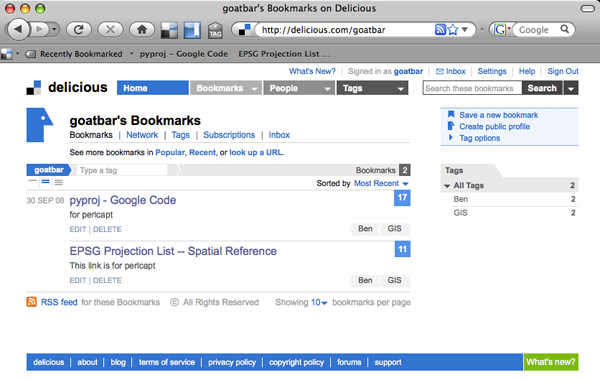
09.29.2008 19:28
Google Earth KMZ image troubles
Is there some trick to putting images
with popups/placemark/thumbtacks within the KMZ zip file structure?
If I do a save as KMZ and then open what works, one image will work
while the rest do not. If I unzip the generated kmz, the doc.kml
will work just fine.
What am I doing wrong in the kml? Here is the file:
GeoEndNote-20080514.kmz
What am I doing wrong in the kml? Here is the file:
GeoEndNote-20080514.kmz
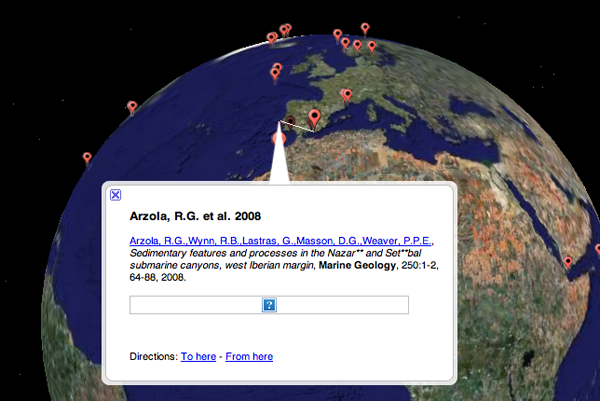
09.29.2008 14:35
Martian upward looking lidar
Phoenix recently took images of the
lidar in action.
These images have been combined to get the color. Today's press conference released this as a movie.
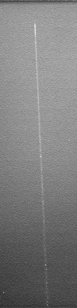
These images have been combined to get the color. Today's press conference released this as a movie.
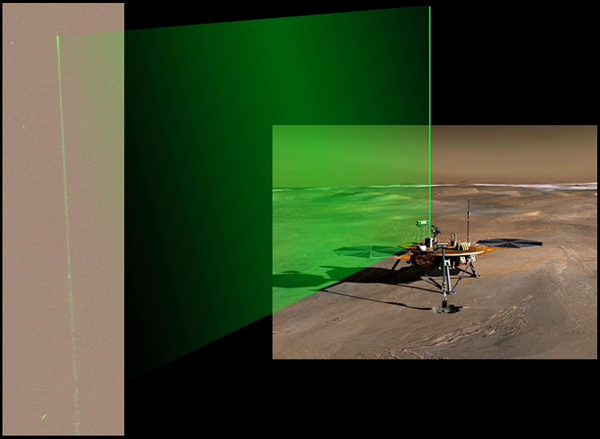
09.29.2008 13:37
Science on a sphere - Colin's flow visualizations
Last week, Colin went to the opening
of his Science on a Sphere demo at the Smithsonian National Museum
of Natural History in D.C. I have to check it out in person next
time I swing through the city.
Diving Into a New World [NY Times]
Diving Into a New World [NY Times]
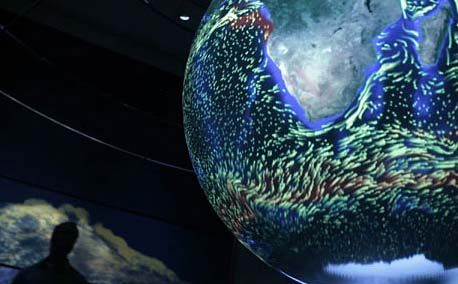
09.29.2008 12:36
Fall begins at UNH
I got a short break out to College
Woods last week. Fall is beginning, but construction is just
beginning on the new wind tunnel.
Looking out over the reservoir...
Somewhere in College Woods...
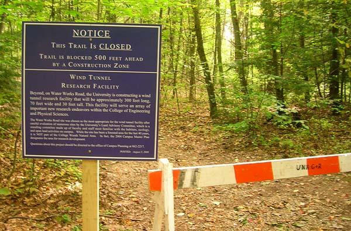
Looking out over the reservoir...
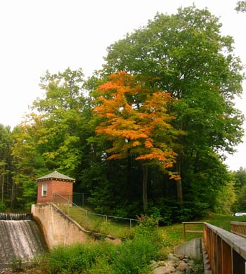
Somewhere in College Woods...
09.29.2008 09:14
Firefox background color printing
Here is how in Firefox, to get the
background colors to print. Pictured here is Firefox 3. It looks a
bit different in Firefox 2.
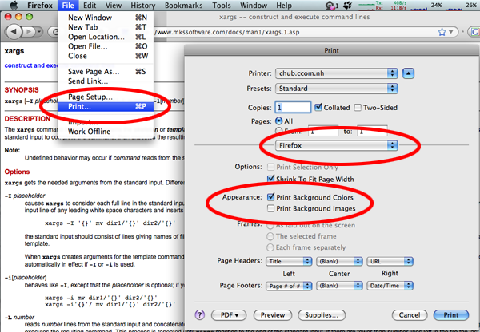
09.28.2008 21:58
Octave (works like Matlab)
If you need a subset of Matlab,
Octave may be the
program for you. And no license keys to worry about.
plotting from this Octave tutorial
GNU Octave is a high-level language, primarily intended for numerical computations. It provides a convenient command line interface for solving linear and nonlinear problems numerically, and for performing other numerical experiments using a language that is mostly compatible with Matlab. It may also be used as a batch-oriented language.
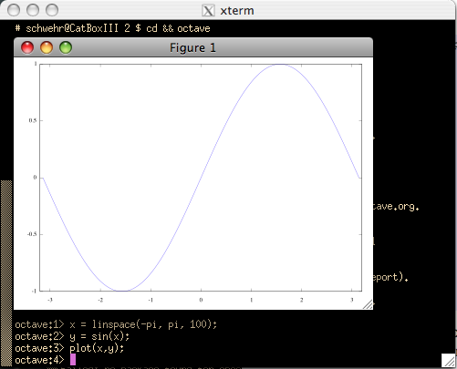
plotting from this Octave tutorial
09.28.2008 13:07
Government data
Government
Data and the Invisible Hand, Robinson et al. [Social Science
Research Network]
If the next Presidential administration really wants to embrace the potential of Internet-enabled government transparency, it should follow a counter-intuitive but ultimately compelling strategy: reduce the federal role in presenting important government information to citizens. Today, government bodies consider their own websites to be a higher priority than technical infrastructures that open up their data for others to use. We argue that this understanding is a mistake. It would be preferable for government to understand providing reusable data, rather than providing websites, as the core of its online publishing responsibility. . Rather than struggling, as it currently does, to design sites that meet each end-user need, we argue that the executive branch should focus on creating a simple, reliable and publicly accessible infrastructure that exposes the underlying data. Private actors, either nonprofit or commercial, are better suited to deliver government information to citizens and can constantly create and reshape the tools individuals use to find and leverage public data. The best way to ensure that the government allows private parties to compete on equal terms in the provision of government data is to require that federal websites themselves use the same open systems for accessing the underlying data as they make available to the public at large.
09.27.2008 12:09
Playing with Zotero, GeoEndNote/GeoCite
Zotero just got sued by EndNote. This makes
me think more about creating a Django app for references complete
with GeoDjango geometry. Not that I have time to try that, but it
seems like a good basic Django app.
Going back to the GeoEndNote stuff that I did with Rochelle and Neil, here is a stripped down version of what EndNote puts out as xml:
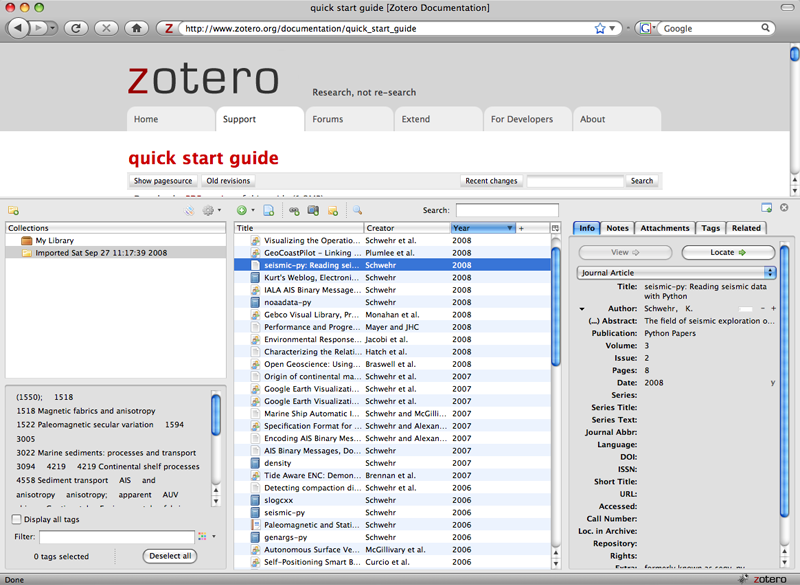
Going back to the GeoEndNote stuff that I did with Rochelle and Neil, here is a stripped down version of what EndNote puts out as xml:
<?xml version="1.0" encoding="UTF-8" ?>
<xml>
<records>
<record>
<database name="GEBCO_LIBRARY.enl" path="\\humpback\classes\SpatialAnalysis\GEBCO_LIBRARY.enl">GEBCO_LIBRARY.enl</database>
<source-app name="EndNote" version="11.0">EndNote</source-app>
<rec-number>99</rec-number>
<foreign-keys>
<key app="EN" db-id="9f5sd9wf8wxar9et9xkxwppg9swsewzf25td">99</key>
</foreign-keys>
<ref-type name="GEBCO">40</ref-type>
<contributors>
<authors>
<author>Hirano, Naoto</author>
<author>Ogawa, Yujiro</author>
<author>Saito, Kazuo</author>
</authors>
</contributors>
<titles>
<title>Long-lived early Cretaceous seamount volcanism in the Mariana Trench, Western Pacific Ocean</title>
<secondary-title>Marine Geology</secondary-title>
</titles>
<periodical>
<full-title>Marine Geology</full-title>
</periodical>
<pages>371-379</pages>
<volume>189</volume>
<number>3-4</number>
<keywords>
<keyword>Pacific Ocean</keyword>
<keyword>seamount</keyword>
</keywords>
<dates>
<year>2002</year>
</dates>
<abstract>An alkaline volcanic rock sample, peralkaline rhyolite pillow lava, ...</abstract>
<image>0247644805Hirano.gif</image>
<caption>Fig. 2. Multi-narrowbeam map of the study area. ...</caption>
<urls>
<related-urls>
<url>http://www.sciencedirect.com/science/article/B6V6M-46RDBRM-2/1/fea80f95670b93f99f309ecc5366d201</url>
</related-urls>
</urls>
<custom1>POINT(147.67,15.5)</custom1> <!-- This is WKT -->
<custom2>1/1</custom2>
<custom4>Neil / Rochelle</custom4>
</record>
</records>
</xml>
But if you look at the full original (plus I cleaned up the
formatting), you will see all sorts of strange style tags that
should not become part of a GeoCite GeoDjango application.
<?xml version="1.0" encoding="UTF-8" ?>
<xml>
<records>
<record>
<database name="GEBCO_LIBRARY.enl" path="\\humpback\classes\SpatialAnalysis\GEBCO_LIBRARY.enl">GEBCO_LIBRARY.enl</database>
<source-app name="EndNote" version="11.0">EndNote</source-app>
<rec-number>99</rec-number>
<foreign-keys>
<key app="EN" db-id="9f5sd9wf8wxar9et9xkxwppg9swsewzf25td">99</key>
</foreign-keys>
<ref-type name="GEBCO">40</ref-type>
<contributors>
<authors>
<author>
<style face="normal" font="default" size="100%">Hirano, Naoto</style>
</author>
<author>
<style face="normal" font="default" size="100%">Ogawa, Yujiro</style>
</author>
<author>
<style face="normal" font="default" size="100%">Saito, Kazuo</style>
</author>
</authors>
</contributors>
<titles>
<title>
<style face="normal" font="default" size="100%">Long-lived early Cretaceous seamount volcanism in the Mariana Trench, Western Pacific Ocean</style>
</title>
<secondary-title>
<style face="normal" font="default" size="100%">Marine Geology</style>
</secondary-title>
</titles>
<periodical>
<full-title>
<style face="normal" font="default" size="100%">Marine Geology</style>
</full-title>
</periodical>
<pages>
<style face="normal" font="default" size="100%">371-379</style>
</pages><volume>
<style face="normal" font="default" size="100%">189</style>
</volume>
<number><style face="normal" font="default" size="100%">3-4</style>
</number>
<keywords>
<keyword>
<style face="normal" font="default" size="100%">Pacific Ocean</style>
</keyword>
<keyword>
<style face="normal" font="default" size="100%">seamount</style>
</keyword>
<keyword>
<style face="normal" font="default" size="100%">Ar-Ar age</style>
</keyword>
<keyword>
<style face="normal" font="default" size="100%">alkali-basalt</style>
</keyword>
<keyword>
<style face="normal" font="default" size="100%">rhyolite</style>
</keyword>
<keyword>
<style face="normal" font="default" size="100%">post-shield volcanism</style>
</keyword>
<keyword>
<style face="normal" font="default" size="100%">Cretaceous</style>
</keyword>
</keywords>
<dates>
<year>
<style face="normal" font="default" size="100%">2002</style>
</year>
</dates>
<abstract>
<style face="normal" font="default" size="100%">An alkaline volcanic rock sample, peralkaline rhyolite pillow lava, in addition to some radiolarian-bearing pelagic sedimentary rocks, were collected by the Japanese submersible Shinkai 6500 from Quesada Seamount on the oceanward slope of the Mariana Trench. 40Ar-39Ar dating resulted in a plateau age of 129.3±2.6 Ma, which is approximately 10 Myr younger than the radiolarian age of the oldest intercalated tuffaceous radiolarian claystone of early Berriasian age (approximately 140 Ma). Fragments of volcanic glass that are of alkali-basalt (hawaiite) composition may indicate that this tuffaceous claystone was formed during the shield-building volcanic stage. Because the peralkaline rhyolite is a very differentiated volcanic rock and commonly erupts in the post-shield stage, we interpret that the activity lasted for a long period (approximately 10 Myr). This long-lived shield-building stage may be due to the slow moving rate of the Pacific Plate during the Early Cretaceous.</style>
</abstract>
<image>
<style face="normal" font="default" size="100%">0247644805Hirano.gif</style>
</image>
<caption>
<style face="normal" font="default" size="100%">Fig. 2. Multi-narrowbeam map of the study area. The dive site is shown by an arrow. Contour interval is 100 m. Referred to Ogawa et al. (1994). </style>
</caption>
<urls>
<related-urls>
<url>
<style face="normal" font="default" size="100%">http://www.sciencedirect.com/science/article/B6V6M-46RDBRM-2/1/fea80f95670b93f99f309ecc5366d201</style>
</url>
</related-urls>
</urls>
<custom1>
<style face="normal" font="default" size="100%">POINT(147.67,15.5)</style>
</custom1>
<custom2>
<style face="normal" font="default" size="100%">1/1</style>
</custom2>
<custom4>
<style face="normal" font="default" size="100%">Neil / Rochelle</style>
</custom4>
</record>
</records>
</xml>
BTW, I am now just using source-highlight for my blog...
source-highlight -i geoendnote.xml -s xml --doc --out-format=html -o geoendnote.html
09.26.2008 14:56
Congress on Open Source software
Open-source software gets a plug from Congress [GCN]
IT'S RARE TO see a concept as technical as open-source software in a federal funding bill. But the House's proposed National Defense Authorization Act for Fiscal Year 2009 (H.R. 5658) (GCN.com, Quickfind 1209) includes language that calls for military services to consider open-source software when procuring manned or unmanned aerial vehicles. ... "The committee is concerned by the rising costs and decreasing security associated with software development for information technology systems. . These rising costs are linked to the increasing complexity of software, which has also resulted in increasing numbers of system vulnerabilities that might be exploited by malicious hackers and potential adversaries," the report states, "The committee encourages the department to rely more broadly on [open-source software] and establish it as a standard for intra-department software development." ...
09.26.2008 13:20
Google Earth KML in Research Competition
Welcome to the
KML in Research Competition
Google is constantly looking for new ways to spur innovation and creativity in science and engineering. We are looking for the best examples of showing your work in Google Earth using KML. And we'll reward the brightest scientists, researchers, and students from all over the world. In addition to prizes, winning entries will be showcased on the Google Earth website and at our booth at the 2008 American Geophysical Union convention.
09.26.2008 13:19
NSF Visualization Contest results announced
2008
Visualization Challenge Winners or better yet, slide show
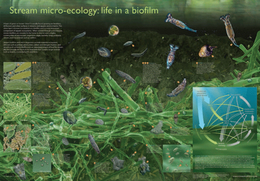
One man's slime is another man's biofilm. research technician Andrew Dopheide of the University of Auckland in New Zealand spends his days studying biofilm in streams under the direction of Gillian Lewis. Hoping to foster wider appreciation for his subject, Dopheide put together an informational graphic on the science of slime. ...Thanks to Art T. for telling me the results are out.
09.26.2008 10:19
Mac software updates - 10.5.5 and X11 2.3.1
I heard some troubles here and there
on the net, but I just went through the Mac OSX 10.5.5 update and
X11-2.3.1 updates and my machine seems to be okay and build X11
apps okay.
http://xquartz.macosforge.org/trac/wiki/X112.3.1
http://xquartz.macosforge.org/trac/wiki/X112.3.1
09.26.2008 09:12
Open source voting software
Counting
Every Vote - California's secretary of state says open-source
software is needed to safeguard electronic voting systems.
California's secretary of state, Debra Bowen, believes that open-source software should be used in elections involving electronic voting machines, to protect against error and fraud. . Speaking in Cambridge, MA, yesterday during a panel discussion at the EmTech organized by Technology Review, Bowen noted that individual counties are currently responsible for purchasing voting machines. Often the choice is left up to an IT professional who may lack detailed knowledge of cryptography and computer security. But the biggest concern, according to Bowen, is a lack of access to the machines' underlying code. "Many times, a person has no legal right to review the software, even if they could," she said. ...
09.26.2008 08:23
Invalid MMSI
Ben at Panbo has an article that
mirrors the troubles we have been seeing with AIS data:
Invalid MMSI numbers, a real problem
For additional discussions, there is:
Automatic Identification System (AIS): Data Reliability and Human Error Implications by Harati-Mokhtari et al, THE JOURNAL OF NAVIGATION (2007), 60, 373-389.
For additional discussions, there is:
Automatic Identification System (AIS): Data Reliability and Human Error Implications by Harati-Mokhtari et al, THE JOURNAL OF NAVIGATION (2007), 60, 373-389.
This paper examines the recent introduction of the AIS to the ship's bridge and its potential impact on the safety of marine navigation. Research has shown that 80 to 85% of all recorded maritime accidents are directly due to human error or associated with human error. Safety is an important element of marine navigation and many people at different levels are involved in its management. The safe and efficient performance of joint systems, is heavily dependent upon how functions are allocated between the human and the machine. This paper investigates different regulations, supervision for proper use, training, and management of AIS users. It uses previous research and three separate AIS studies to identify problems. The potential of the AIS to cause problems is analysed. The classic human factor "Swiss Cheese" Model of system failure has been modified for the AIS to investigate a possible accident trajectory. The paper then concludes with recommendations and suggestions for improvements and further work.I my work with NOAA, we've seen that anything that requires human data entry is going to have errors in addition to things like the Nauticast reset issue that cause an MMSI reset to factory defaults. Other things I've seen include things likes names that are all spaces, quotes in the name, complete empty names, mmsi's of 0 or 1, dimensions that are the wrong units or swapped (there are 4 you enter: A, B, C, D), fields not updated (destination, draught, etc), and so forth. Then there are fields on units that you are not sure what they are used in a particular area (number of persons on board - used in London).
09.25.2008 15:02
Tomorrow's CCOM seminar - 1-2 slides per person
Tomorrow is the first CCOM seminar
for the 2008-09 season. We've been asked to provide 1-2 slides to
summarize our research. My work is sufficiently diverse to make
this task difficult. Here is my attempt. I have an advantage in
that I'm giving the CCOM seminar talk next Friday on Oct 3rd, where
I will talk about working on the Phoenix Mars Lander. Depicted here
topics that include: polar exploration, marine conservation, 3D
computer vision, Mars exploration, AIS, blogs, wikis, GoogleEarth,
global seafloor mapping, and field work at sea and on land. In the
center is one of my all time favorite projects where I made 3D
stereo models of Yellowstone hot springs
and geysers. I threw in python and fink for good measure.
I'm having funny flashbacks to NASA project quad-charts.
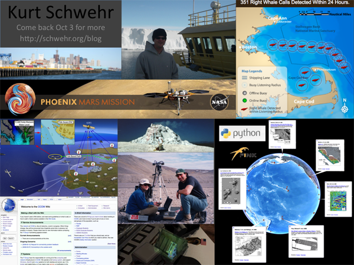
I'm having funny flashbacks to NASA project quad-charts.
09.24.2008 20:37
How can this shared library problem happen?
What happened to my fink pysqlite2
package? This is the same library. What? This works:
In [1]: import pysqlite2So what is going on that this does not work?
In [2]: import pysqlite2.dbapi2
======================================================================
ImportError Traceback (most recent call last)
/Users/schwehr/projects/src/noaadata/scripts/<ipython console> in <module>()
/sw/lib/python2.5/site-packages/pysqlite2/dbapi2.py in <module>()
25 import time
26
---> 27 from pysqlite2._sqlite import *
28
29 paramstyle = "qmark"
ImportError: dlopen(/sw/lib/python2.5/site-packages/pysqlite2/_sqlite.so, 2):
Symbol not found: _sqlite3_enable_load_extension
Referenced from: /sw/lib/python2.5/site-packages/pysqlite2/_sqlite.so
Expected in: dynamic lookup
After an hour and a half bouncing things off of pogma and akh, I've
got it figured out. Turns out that extension handling for sqlite3
in fink is turned off. Might be a tcl build issue. I haven't tried
the latest sqlite (3.6.2) to see if things are better. The
configure script for sqlite3 does not seem very well behaved.
perl -pi -e 's,#define HAVE_LOAD_EXTENSION,#undef HAVE_LOAD_EXTENSION,' src/connection.cUpdate to the latest pysqlite2-py25 in fink and all should be well.
09.24.2008 14:23
TeraVision
Andy M. pointed me to this. It looks
cool, but there is an SGI Octane in the figure... blast from the
past. Anyone have comments on using this system?
http://www.evl.uic.edu/cavern/teravision/
http://www.evl.uic.edu/cavern/teravision/
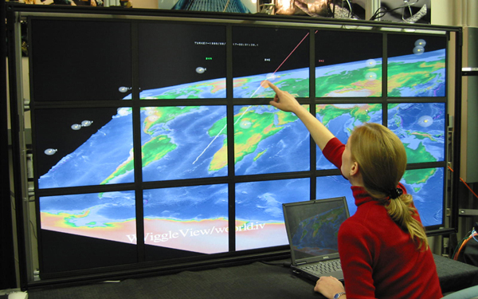
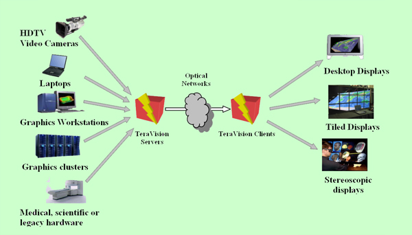
09.24.2008 13:48
Phx on NPR Science Friday
npr_94836803.mp3
Science Friday travels to the home base of NASA's Phoenix Mars Lander in Tuscon, Ariz., to discuss the continuing exploration of Mars. Scientists explain how various robots, both on the surface and in orbit, are mapping and cataloging the Red Planet.
09.24.2008 13:28
Jeff Riffle's new website
Just found out that Jeff has a new website: Jeff Riffle. Jeff gave me a tour of the lab at the UofA while I was in town for Phoenix operations. He showed me crazy things like raising hawk moths.
This isn't the exact species but it gives you the sense of the type of critter that he is raising for neuroecology studies:
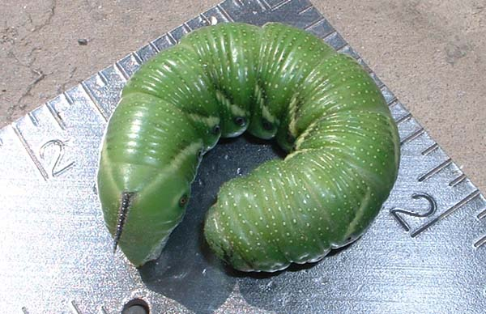
[source: wikipedia - Image:Tomato Hornworm Larva - Relic38 - Ontario Canada.JPG]

The neurology of sensing is a big topic these days. Someone just won a MacArthur foundation grant for fruit fly work on this: Rachel Wilson.
09.24.2008 10:29
Controlling other computers
Update: Val pointed me to this
client:
Remote Desktop Connection Client for Mac 2 [microsoft]. Works
pretty well.
Gone are the days when every computer I used had x11 and all apps were x11 based. Way back when, I could just ssh -X to any computer and work as if I was on the console. Now I have to manage Windows, Mac and Linux computers all over a variety of networks. Linux is easy. The rest present challenges. Here is some of what I've been doing. Thanks to Val for adding another solution to the mix! He pointed me to the Mac OSX 10.5 built in "Screen Sharing".
Mac OS X 10.5 Leopard: the Ars Technica review - Screen sharing
From the finder, select a mac and share the screen:
You can control the connection somewhat:
Screen sharing can be launched from the command line...
But don't try to connect to a Windows XP machine:
I have been using something like this to connect to Windows from a Mac. You can specify a percent of your screen or a fixed pixel size.
There are lots of other possible ways including Apple Remote Desktop (ARD; $$$), VNC (of which there are many clients), LogMeIn (Is there a good ref on what they are actually doing?), pc2tv, xwd (xwindows dump), and many more... It all depends on the environment, available budget and what you are trying to do.
Gone are the days when every computer I used had x11 and all apps were x11 based. Way back when, I could just ssh -X to any computer and work as if I was on the console. Now I have to manage Windows, Mac and Linux computers all over a variety of networks. Linux is easy. The rest present challenges. Here is some of what I've been doing. Thanks to Val for adding another solution to the mix! He pointed me to the Mac OSX 10.5 built in "Screen Sharing".
Mac OS X 10.5 Leopard: the Ars Technica review - Screen sharing
From the finder, select a mac and share the screen:
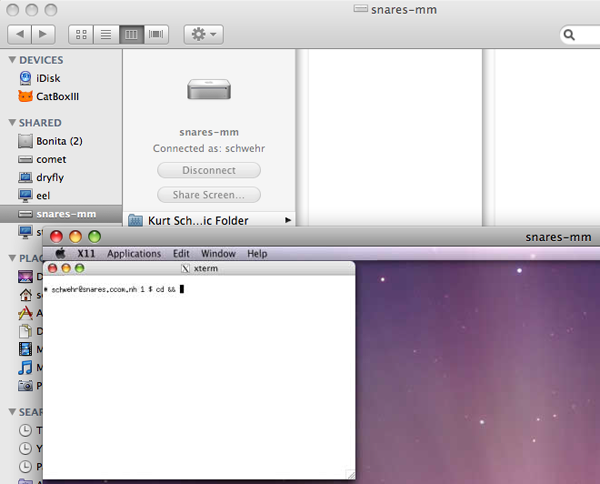
You can control the connection somewhat:
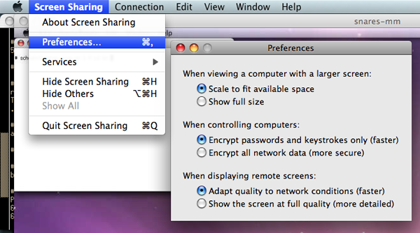
Screen sharing can be launched from the command line...
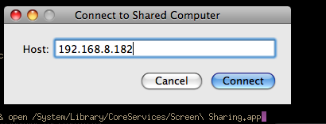
But don't try to connect to a Windows XP machine:
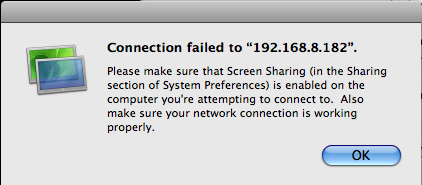
I have been using something like this to connect to Windows from a Mac. You can specify a percent of your screen or a fixed pixel size.
% fink install rdestop % rdesktop -g 1700x800 192.168.8.182 % rdesktop -g 60% 192.168.8.182
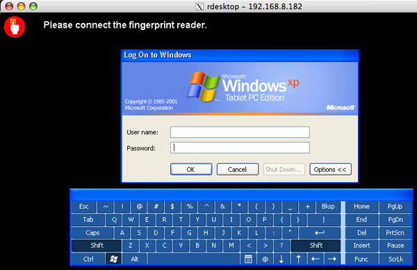
There are lots of other possible ways including Apple Remote Desktop (ARD; $$$), VNC (of which there are many clients), LogMeIn (Is there a good ref on what they are actually doing?), pc2tv, xwd (xwindows dump), and many more... It all depends on the environment, available budget and what you are trying to do.
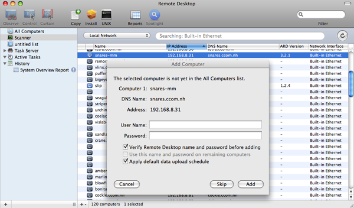
09.23.2008 22:52
UNH Construction camera - CCOM from up on high
A view of CCOM from up high...
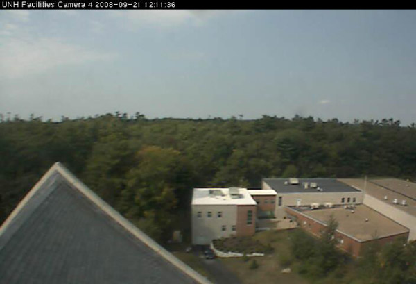
09.23.2008 17:10
FedEx flight control
I ran into someone who hadn't seen
this visualization of planes going around a storm, so here it is
from youtube:
Highly Skilled Air Traffic Controller
Highly Skilled Air Traffic Controller
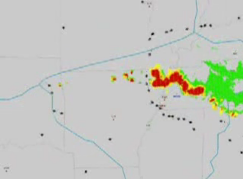
09.23.2008 17:02
USCG Maritime Awareness Global Network (MAGNET)
Just heard about the USCG MAGNET
system, which receives a N-AIS feed. How does this relate to tools
like MISLE?
[wikipedia]
Maritime Awareness Global Network - Wikipedia
Maritime Awareness Global Network - Wikipedia
... The United States Coast Guard, an agency of the Department of Homeland Security, developed the Maritime Awareness Global Network (MAGNET) system to use information relating to vessels and activities within the maritime environment to accomplish the Coast Guard's missions in the areas of Maritime Safety, Maritime Security, Maritime Mobility, National Defense, and Protection of Natural Resources. MAGNET replaces the Joint Maritime Information Element (JMIE) Support System JSS. MAGNET processes personally identifiable information (PII). . Coast Guard Intelligence uses MAGNET provides awareness to the field as well as to strategic planners by aggregating data from existing sources internal and external to the Coast Guard or the Department of Homeland Security. MAGNET correlates data and provides the medium to display information such as ship registry, current ship position, crew background, passenger lists, port history, cargo, known criminal vessels, and suspect lists. Coast Guard Intelligence serves as MAGNET's executive agent and shares appropriate aggregated data on a need to know basis with other law enforcement and intelligence agencies. ...
09.23.2008 12:20
Neptune Construction
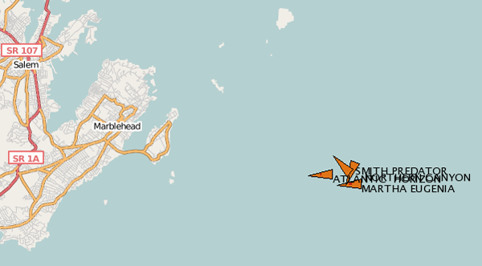
Construction Continues on Neptune LNG Deepwater Port [lnglawblog]
LNG almost done; pipeline to be buried next month [Gloucester Times]
Workers on the giant barges building and burying pipeline for the Neptune liquefied natural gas port off the Gloucester shore have finished two-thirds of their work and the final phase of construction this year is scheduled to end next month. . The pipeline is part of a $1 billion LNG project being constructed by Suez Energy. Work on it began in July when the 313-foot-long Lone Star Horizon, run by contractor Cal Dive, started laying pipeline from the terminal location 10 miles southeast of Gloucester to a point 3.12 miles from Marblehead, where it connects to the existing Algonquin HubLine. The HubLine runs from Salem to Weymouth, where it connects to overland pipe. . With the completion of the 13-mile pipeline, the Lone Star was replaced by the 420-foot-long Atlantic, which was responsible for digging a 6-foot-deep trench while stuffing the pipeline inside. ...
09.23.2008 12:14
Python Papers - Call for papers
Call for Papers, Volume 3 Issue 3
We would like to call for papers, articles, opinion pieces and feedback to include in Volume 3, Issue 3 of The Python Papers. We would love to receive articles on Python for beginners and discussions about Python performance. Any article will be gratefully received, of course, so do not let the above list of suggestions deter you from considering an article on another topic.If you are a python person, you should consider publishing in The Python Papers.
09.23.2008 11:25
Phoenix Mars Lander remote operations
Nice timing on this article. I was
just working on my RKSML (Rover Kinematic State Markup Language)
converter script. The script takes the robotic arm (RA) motion and
produces Lightwave keyframe scene files (lws) and my state stamp
markup language (ssml) for the animation teams. A naming convention
of one of the teams changed, so my 100 line bash control script
needed to know about the new possible source file. This kind of
stuff was much easier when I could just wander over to another part
of the spacecraft operations center. Now I have to be extra
diligent about documentation and emailing everyone who needs to
know. Without VPN, ssh, scp, remote desktop, cell phones, email and
collaboration web software, we would be in big trouble.
Most Phoenix Mars Lander mission scientists have gone home [Tucson Citizen]
Most Phoenix Mars Lander mission scientists have gone home [Tucson Citizen]
Distance is posing challenges for researchers running the Phoenix Mars Lander mission. . Not only are Phoenix scientists operating a craft 230 million miles away, but most of the 150-member science and engineering team have in recent weeks left the Tucson Science Operations Center to return home. . During the summer more than 100 researchers would pack the SOC's large downlink room to review the previous day's data as it arrived via satellite from the Lander and plan the mission's next scientific activities. . On a recent morning, 11 researchers were in the room, with six times that many remotely attending the meeting using a high-tech networked communications system. ...
09.22.2008 16:14
video standards
Not sure what the original source is.
Got this via Eric at JPL.
A72 [atsc.org]
In their press release on AVC, for the first time in public, the ATSC refers to "ATSC 2.0." This concept for next generation services for fixed receivers is part of the ATSC long-term strategic plan for the future of DTV. ATSC 2.0 is currently in the development stage in the ATSC Planning Committee, chaired by NAB Science & Technology staff member Graham Jones, and is a separate effort from the mobile/handheld standard now in preparation. Various new capabilities are envisioned for ATSC 2.0, which is expected to trigger a new generation of receivers potentially including AVC. . "WASHINGTON, September 2008 - The Advanced Television Systems Committee, Inc. has approved and published A/72 which details the methodology to utilize Advanced Video Coding (AVC) within an ATSC DTV transmission. AVC, which was developed by the ITU-T Video Coding Experts Group together with the ISO/IEC Moving Picture Experts Group, is also known as H.264 and MPEG-4 Part 10. The A/72 Standard defines constraints with respect to AVC, compression format restraints, low delay and still picture modes, and bit stream specifications. In addition it specifies how CEA-708 closed captions are to be carried in an AVC bit stream. The new standard is in two parts, Part 1 is titled "Video System and Characteristics of AVC in the ATSC Digital Television System," and "Part 2 "AVC Video Transport Subsystem Characteristics."ATSC ADOPTS STANDARD FOR ADVANCED VIDEO CODING [testfreaks.com]
A72 [atsc.org]
09.21.2008 12:01
View of from the Healy of Louis St. Laurent
Betsy Baker posted a picture in
#19 Conflict in the Arctic? The Tenacity of Media Spin where
you can see the Canadian ice breaker.
I found this one that I like: 20080919-0101.jpeg
20080919-0001.jpeg is also a realy nice image.
I found this one that I like: 20080919-0101.jpeg

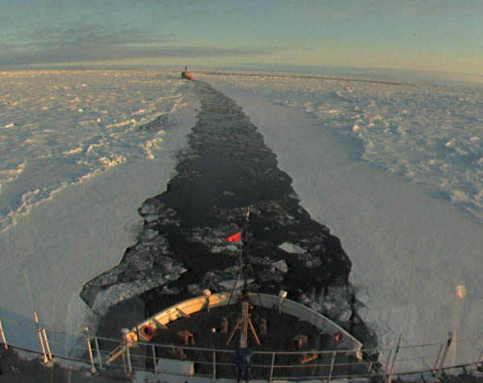
20080919-0001.jpeg is also a realy nice image.

09.21.2008 11:43
National Academy draft Report on Marine Debris
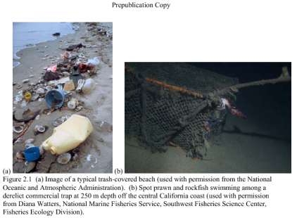
Tackling Marine Debris in the 21st Century
Excutive Summary
... In its analysis, the committee identified four overarching areas in which additional emphasis is needed to adequately address the marine debris problem. Broadly, they center on; (1) marine debris management, leadership, and coordination; (2) information and metrics with which to assess effectiveness of current measures or efficiently direct future efforts; (3) port reception facilities for shoreside disposal; and (4) the distinct aspects of managing fishing gear as a source of marine debris. Salient supporting recommendations are presented under each overarching recommendation; additional recommendations and the basis for all of the findings and recommendations are included in Chapters 2, 3, and 4. ...
09.21.2008 09:09
matplotlib and lidar
Update 20080926: Thanks to
Bror Jonsson for a patch to matplotlib-basemap-data-py. How to ask
the path to the data files had changed. There is still likely
troubles with libgeos2 lurking. If it is not working, make sure to
install libgeos2 in addition to libgeos2-shlibs.
There is some bad version number stuff going on with libgeos[23]...
libgeos did not increment their version numbers of the dylibs
enough in the libgeos2 to 3 update.
I finally got around to updating matplotlib and the basemap in fink to the latest version. I really need to spend more time with the package. It can produce somereally great results. I always seem to drop back to the old standby of gnuplot.
From Jeff Whitaker's tutorial... Azimuthal Equidistant Projection.
Thanks to Jed Frechette for getting me to update the package. He has some open source python software for lidar: TLSpy. Check out his photo gallery I think this one of trees is especially cool...
Side note: I ran into packaging trouble with matplotlib and the basemap portion. Both try to put an __init__.py in the same place, such that there is a clash between the debs. The files are identical. Trying to be a good citizen, I've submitted a bug report:
[ 2121676 ] Clash between matplotlib and matplotlib-basemap [sf.net matplotlib tracker]
I finally got around to updating matplotlib and the basemap in fink to the latest version. I really need to spend more time with the package. It can produce somereally great results. I always seem to drop back to the old standby of gnuplot.
From Jeff Whitaker's tutorial... Azimuthal Equidistant Projection.
from mpl_toolkits.basemap import Basemap
import numpy as np
import matplotlib.pyplot as plt
width = 28000000; lon_0 = -105; lat_0 = 40
m = Basemap(width=width,height=width,projection='aeqd',
lat_0=lat_0,lon_0=lon_0)
m.drawmapboundary(fill_color='aqua')
m.drawcoastlines(linewidth=0.5)
m.fillcontinents(color='coral',lake_color='aqua')
m.drawparallels(np.arange(-80,81,20))
m.drawmeridians(np.arange(-180,180,20))
xpt, ypt = m(lon_0, lat_0)
m.plot([xpt],[ypt],'ko')
plt.title('Azimuthal Equidistant Projection')
plt.savefig('aeqd.png')
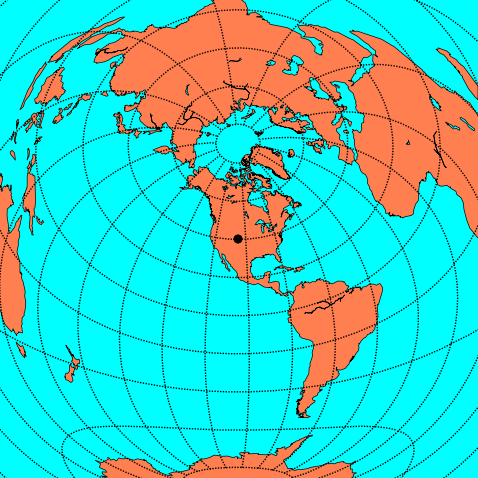
Thanks to Jed Frechette for getting me to update the package. He has some open source python software for lidar: TLSpy. Check out his photo gallery I think this one of trees is especially cool...
Side note: I ran into packaging trouble with matplotlib and the basemap portion. Both try to put an __init__.py in the same place, such that there is a clash between the debs. The files are identical. Trying to be a good citizen, I've submitted a bug report:
[ 2121676 ] Clash between matplotlib and matplotlib-basemap [sf.net matplotlib tracker]
09.21.2008 07:10
Phoenix mission extended
My little contribution to Phoenix
last week... I assisted with the image release process for
Friday.
Cloud animated gif
Frost in the trench - Fall is coming to NH too.
NASA extends Mars lander mission again [Boston.com/AP]
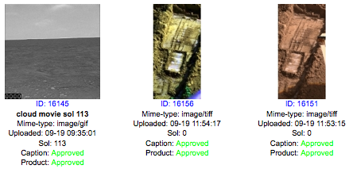
Cloud animated gif
Frost in the trench - Fall is coming to NH too.
NASA extends Mars lander mission again [Boston.com/AP]
... NASA spokesman Dwayne Brown said Thursday the space agency will invest about $6 million to keep the $422 million mission going through December. . It's the second and possibly last extension since the lander may not survive the upcoming Martian winter. ...
09.20.2008 22:21
photo meme
Can you read what is on my computer
screen from my glasses? Indoors with not enough light.
Instructions: Take a picture of yourself right now. Don't change your clothes, don't fix your hair - just take a picture. Post that picture with NO editing. Post these instructions with the picture.
Instructions: Take a picture of yourself right now. Don't change your clothes, don't fix your hair - just take a picture. Post that picture with NO editing. Post these instructions with the picture.
09.19.2008 10:39
Cosco busan article
Track back:
Cosco Busan - Radar Images And NTSB Transcript
Pilotage Paradox by Paul Drouin [gCaptain]
Cosco Busan radar movie [mp4]
Pilotage Paradox by Paul Drouin [gCaptain]
... In the seven minute interval between leaving the inner harbour and striking the bridge pylon, the pilot gave 13 helm orders without the slightest indication on the bridge of the Cosco Busan that anything was amiss. We know this because the National Transportation Safety Board (NTSB) has left an amazing amount of information on their public docket website, including transcripts of the bridge voice recordings. . Leaving berth 56 (Port of Oakland) and passing under the San Francisco-Oakland Bay Bridge is a relatively simple matter, even under blind pilotage conditions, as only two course changes bring you through the span. The Delta-Echo span of the bridge is wide, with a horizontal clearance of 673 meters, and is equipped with a RACON dead center of the span. For the Cosco Busan, winds were light and the vessel would be stemming the flood current as it passed under the bridge. This maneuver should not give an experienced 3rd Mate cause to sweat, much less an experienced pilot. ...389888.pdf [ntsb] from NTSB Docket Management System - List of Contents
08:26:56 CREW full ahead full ahead. 08:27:10 CREW starboard twenty. 08:27:12 PILOT thank you. 08:27:24 VTS unit romeo traffic. 08:27:29 PILOTVHF traffic romeo. 08:27:37 PILOT ease to ten. 08:27:40 CREW ease to ten. 08:27:43 CREW rudder starboard ten. 08:27:45 PILOTVHF trafic romeo did you call. 08:27:48 VTS unit romeo traffic uh AIS shows you on two three five heading what are your intentions over? 08:27:57 PILOTVHF well I'm comin' around I'm steering two eighty right now. 08:28:02 PILOT starboard twenty. 08:28:02 CREW starboard twenty. 08:28:04 VTS roger understand you still intend ** span? 08:28:06 CREW starboard twenty sir. 08:28:08 PILOT this is the center of the bridge right? 08:28:11 CREW yeah yeah. 08:28:12 PILOT yeah. 08:28:13 PILOT hard starboard. 08:28:14 CREW hard starboard. 08:28:15 PILOTVHF yeah we're still delta echo. 08:28:22 CREW hard starboard sir. 08:28:42 PILOT midships. 08:28:44 CREW midship. 08:28:51 PILOT starboard twenty. 08:28:53 CREW starboard twenty. 08:29:01 PILOT hard starboard. 08:29:02 CREW hard starboard. 08:29:04 CHOFFUHF **. 08:29:06 CAPT what did he say? 08:29:08 CREW hard starboard sir. 08:29:09 CHOFFUHF the bridge column the bridge column. 08:29:11 CAPTUHF oh I see it I see it. 08:29:14 CREW *. 08:29:16 PILOT yeah I see it. 08:29:22 CREW rudder hard starboard sir. 08:29:26 PILOT midships. 08:29:27 CREW midship. 08:29:31 PILOT hard port. 08:29:32 CREW hard port. 08:29:44 CREW hard port sir. 08:29:44 CREW rudder hard port sir. 08:29:55 CREWwheel hard port. 08:30:05 CREW wheel is hard port sir. 08:30:07 PILOT okay midships. 08:30:08 CREW midships. 08:30:10 PILOT dead slow ahead. 08:30:11 CREW dead slow ahead. 08:30:12 PILOTVHF yeah traffic we just touched the delta span I'm gonna go to...I'm gonna try get her anchored anchorage nine- or anchorage seven. 08:30:20 CREW midships sir. 08:30:24 CREWUHF captain captain. 08:30:25 CHOFFUHF there is a leak there is leak. 08:30:27 CREWUHF okay okay it's all right now. 08:30:32 PILOT is the ship all right? is the ship all right? 08:30:34 CAPT no no no it's leaking leaking. *.
Cosco Busan radar movie [mp4]
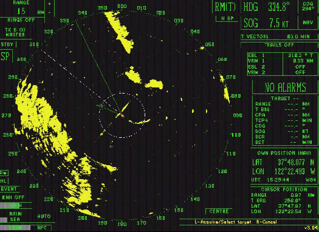
09.19.2008 10:25
More Healy ice breaker stuff on the web
Interesting Ship of The Week - USCGC Healy [gCaptain]
Monica has posted more pictures from the cruise and an image of the chirp showing the foot of the slope.
Monica has posted more pictures from the cruise and an image of the chirp showing the foot of the slope.
09.19.2008 09:24
Global shipping patterns
Colin just pointed me to this paper.
I haven't redone the literature search on this topic since middle
of 2007, so I hadn't run into it.
Halpern et al., 2008: A Global Map of Human Impact on Marine Ecosystems [sciencemag]
full image
Trackback: Maritime Monday 128 [gCaptain.com]
Halpern et al., 2008: A Global Map of Human Impact on Marine Ecosystems [sciencemag]
The management and conservation of the world's oceans require synthesis of spatial data on the distribution and intensity of human activities and the overlap of their impacts on marine ecosystems. We developed an ecosystem-specific, multiscale spatial model to synthesize 17 global data sets of anthropogenic drivers of ecological change for 20 marine ecosystems. Our analysis indicates that no area is unaffected by human influence and that a large fraction (41%) is strongly affected by multiple drivers. However, large areas of relatively little human impact remain, particularly near the poles. The analytical process and resulting maps provide flexible tools for regional and global efforts to allocate conservation resources; to implement ecosystem-based management; and to inform marine spatial planning, education, and basic research.The data and more detailed figures are available here: http://www.nceas.ucsb.edu/GlobalMarine/impacts
full image

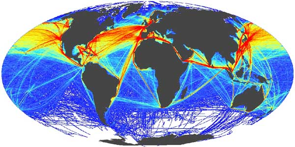
Trackback: Maritime Monday 128 [gCaptain.com]
Kurt's Weblog has an image mapping "Global shipping patterns".
09.18.2008 17:40
NPR Science Friday - Phoenix Mars Lander
Mars
(broadcast Friday, September 19th, 2008)
In this segment, we'll get the big picture on science on the planet Mars. From orbiting observatories to roving rovers to the ditch-digging Phoenix -- what have planetary scientists learned about Mars, and what remains to be discovered? . The most recent visitor to the Red Planet is NASA's Phoenix Mars Lander, which launched in August 2007 as the first mission in NASA's Scout Program. Phoenix is designed to study the history of water and habitability potential in the Martian arctic's ice-rich soil. So far, the lander has identified water ice in soil samples, and has detected the chemical perchlorate in the soil, a sign of the presence of liquid water in the past. . The Phoenix Mars Lander joins the twin rovers of the Mars Exploration Rover project, Spirit and Opportunity, which have been in operation since 2004. Now running years past their planned lifetime on Mars, the rovers are still exploring the surface. Rover Opportunity recently exited the Victoria Crater after several months on the crater floor. . Several orbiting observatories, including Mars Odyssey, Mars Express, and Mars Reconnaissance Orbiter are examining the different aspects of the planet from above. The orbiting platforms have studied the planet's atmosphere, mapped its surface, and are also supporting the ground-based exploration missions.
09.18.2008 10:14
Web-Of-Science star tree
The Web Of Science has a tool to
visualize references that I haven't used before. Kind of fun. Not
sure how useful it will be down the road, but it makes it easy to
see what references look to be promissing for finding additional
references.
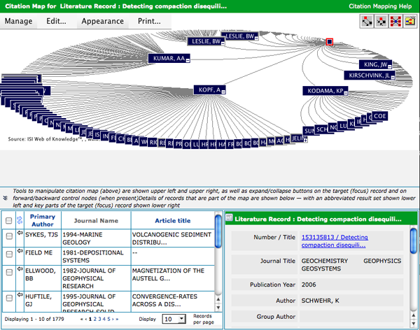
09.17.2008 23:41
Class B AIS in the US
Class B AIS here?, but worthless? [panbo]
Today two reliable sources told me that all five FCC commissioners have now signed off on Class B AIS for US waters, though neither knows when the Order will become effective. The final step should be an announcement in the FCC Daily Digest. ...For understand use of various waterways, Class B will be a huge step forward. I do most of my analysis on downsampled data where I get at most one report per minute for each vessel. However, read the rest of Ben's articles for issues about collision avoidance.
09.17.2008 20:50
Healy Twitter
I though I had written about this,
but I don't see anything in my notes. The USCG Ice Breaker Healy
has a twitter feed: http://twitter.com/cgchealy
With posts like this: September 16, 2008 update
With posts like this: September 16, 2008 update
Greetings from the frozen north. The ship is covered in ice and operations with the Louis are in full swing. Two weeks remain in our operation with the Canadians and things are progressing smoothly. . After flight ops finished on Saturday, we made a beeline for our rendezvous point with the Louis. On Tuesday we met them and commenced flight operations to allow the science parties on both vessels to meet and discuss the plans for the coming weeks. After the meetings were finished, the Louis was able to lower its seismic gear so that we could commence the first transect. ...
09.16.2008 12:04
Data interoperability and integration
I was talking to Ru Morrison this
morning and he mentioned several additional efforts that I was not
aware of. It's time for a summary post.
EPA Exchange Network
Open Geospatial Consortium (OGC) - OGC Ocean Science IE Report has been submitted to OGC [oostethys.org]
See also:
EPA Exchange Network
The Exchange Network is a partnership among states, tribes, and the U.S. Environmental Protection Agency that is revolutionizing the exchange of environmental information. Partners on the Exchange Network share data efficiently and securely over the Internet. This new approach is providing real-time access to higher quality data while saving time, resources, and money for partner states, tribes, and territories.NASA Global Change Master Diretory (GCMD)
Our goal is to enable users to locate and obtain access to Earth science data sets and services relevant to global change and Earth science research. The GCMD database holds more than 25,000 descriptions of Earth science data sets and services covering all aspects of Earth and environmental sciences. One can use the search box or select from the available keywords to search for data and services. We encourage your participation in writing and maintaining the information in our databases. You will find authoring tools to assist you. In addition, Subscription services are available to notify you of new entries. The Committee on Earth Observation Satellites (CEOS) International Directory Network (IDN) Interoperability Forum is available to discuss content and database issues.Marine Metadata Interoperability Project (marinemetadata.org) CCOM has been working in this group.
Open Geospatial Consortium (OGC) - OGC Ocean Science IE Report has been submitted to OGC [oostethys.org]
See also:
- Global Earth Observation System of Systems (GEOSS) [epa.gov]
- National Ecological Observatory Network (NEON)
- [neoninc.org]
09.15.2008 21:54
Cape Cod hardware install
Today, the Cape Cod National
Seashore, USCG, NOAA, and UNH all met out on Cape Cod. The first
order of business was an antenna repair:
Here is me upstairs on a conference call.
The new station after it was installed.
The minimum keyboard display (MKD) on the unit.
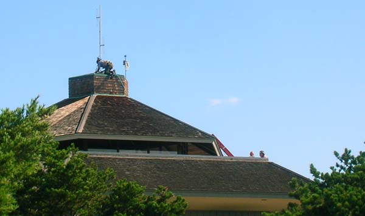
Here is me upstairs on a conference call.
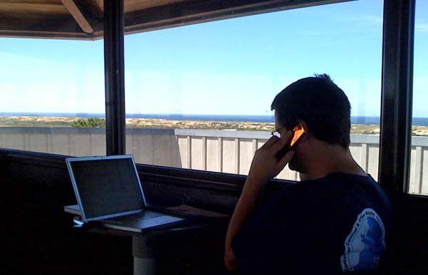
The new station after it was installed.
The minimum keyboard display (MKD) on the unit.
09.14.2008 14:36
Fall webworms
The fall webworms
(Hyphantria cunea) have been going strong this year. My yard has
escaped them, but UNH has lots. These two pictures show them
starting on the south short of Lake Winnipesaukee at the end of
July.
Webworms or Halloween Decorations? [unh extension]
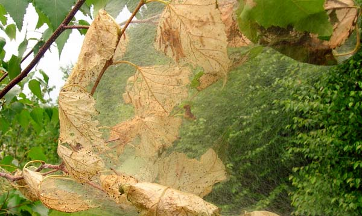
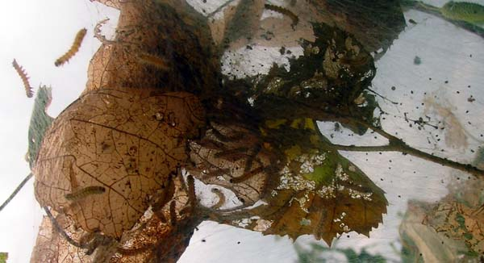
Webworms or Halloween Decorations? [unh extension]
... Those hairy webworms eating your leaves at the moment will live in the soil this winter as pupae, emerging next July as pure white moths. Then the cycle will begin again. . Unlike that spring pest, the Eastern tent caterpillar, the fall webworm isn't very harmful to the plants it feeds on. Unsightly perhaps, but the leaf feeding happens so late in the year that little damage is done to the health of the tree. . Why not think of the nests as early Halloween decorations? I know I've seen worse draped over trees.
09.14.2008 09:01
Mid-September Garden
Fall is approaching and it looks like
many of my attempts in the garden did not make it this year. There
have been many surprises both in terms of successes and failures.
The biggest failure has been swiss chard. Last year, I could do no
wrong to the chard and all groups of the plant just kept producing
like crazy until the frost. On the other side of things, the two
tyes of beans that I've got in are not quite there yet, but
producing more beans than I thought possible.
The neighbor's castor bean (Ricinus communis) plants are spectacular again this year.
There has been an explosion of crickets - enough that before I mowed the lawn yesterday, it looked like the grass was all moving before me when I walked. I think the lawn mower caused a massacre.
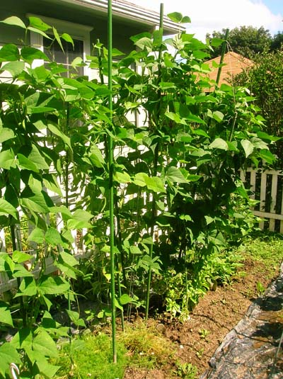
The neighbor's castor bean (Ricinus communis) plants are spectacular again this year.
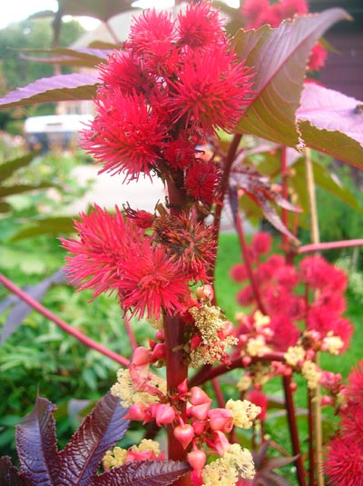
There has been an explosion of crickets - enough that before I mowed the lawn yesterday, it looked like the grass was all moving before me when I walked. I think the lawn mower caused a massacre.
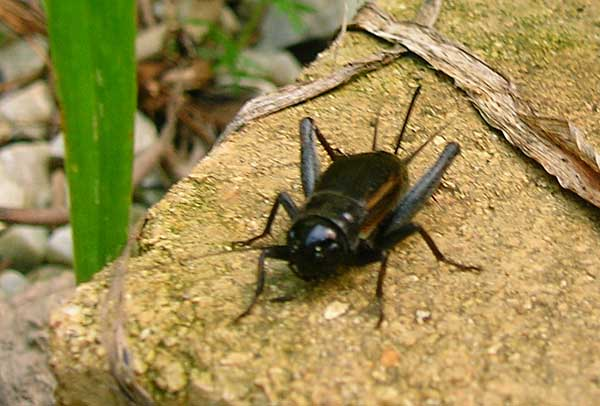
09.13.2008 17:59
Django and JQuery
I am too overloaded to go check this
out, but sounds like what I have been hoping to try to do: Orderable inlines
using drag and drop with jQuery UI [django snipped 1053]
Also - exceptions - Builtin error classes [Doug Hellmann] Only recently, have I started trying to get better at using exceptions in Python. Definitely improves my code.
An easy way of making inlines orderable using drag-and-drop, using jQuery UI's sortable() plugin. . First, add an "order" field to the inline models which is an IntegerField, and set that model to use 'order' as its default order_by. . Then hook in the JavaScript. This should make them drag-and-drop sortable using jQuery UI, and also hide the divs containing those order fields once the page has loaded. This technique is unobtrusive: if JavaScript is disabled, the order fields will be visible and the user will be able to manually set the order by entering numbers themselves.
Also - exceptions - Builtin error classes [Doug Hellmann] Only recently, have I started trying to get better at using exceptions in Python. Definitely improves my code.
09.12.2008 09:50
User activated fog signals
Coast Guard reminds boaters about remote activated fog signals
[Coast Guard News]
... Visibility detectors and remote activated phone line switches were problematic, sometimes causing continuous operation of the fog signal, which resulted in numerous complaints from nearby residents. The fog horn is now activated by mariners using VHF marine band radios. Keying the microphone five times while on channel 79a (156.975 MHZ) will activate the fog horn for a period of 30 minutes, after which the fog horn automatically shuts off. ...Comment from Roland:
Cool, small airports have had this for runway lights a long time ago!
09.12.2008 06:42
Delay-Tolerant Networking (DTN) in space
DTN in space: UK-DMC
satellite first to transfer sensor data from space using 'bundle'
protocol [sstl.co.uk]
... The UK-DMC satellite has delivered delay-tolerant networking 'bundles' carrying remote-sensing image data to NASA Glenn Research Center in Cleveland, Ohio, via SSTL's Guildford, England, Mission Control Centre. The first complete image, of South Africa's Cape of Good Hope, was downloaded in fragments across two separate satellite passes to a 'bundle agent' in SSTL's ground station. The fragments were then sent across the Internet to NASA Glenn's agent, and reassembled into the image file. That file was then delivered back to SSTL for post-processing and orthorectification. ...
09.11.2008 21:48
First non-localhost django site
I finally have my first Django site
up on the internet beyond using the built in debug server. I'm
using apache2 with mod-python. I'd write up the SSL config with
apache2, but I did that quite a while ago on my dev server.
I haven't converted my application from 0.96 to 1.0. It is mostly just using the admin interface that I've customized. Also, I did a tweak by installing Django in my home directory rather than from a Ubuntu deb. My project is called "dt", for Django test: /home/schwehr/dt
I used the Django modpython 0.96 page and a bunch of googling to figure out the Alias and 2nd location tag that turns off the mod python on the media subtree.
Here is what I added to /etc/apache2/sites-available/ssl:
I haven't converted my application from 0.96 to 1.0. It is mostly just using the admin interface that I've customized. Also, I did a tweak by installing Django in my home directory rather than from a Ubuntu deb. My project is called "dt", for Django test: /home/schwehr/dt
I used the Django modpython 0.96 page and a bunch of googling to figure out the Alias and 2nd location tag that turns off the mod python on the media subtree.
Here is what I added to /etc/apache2/sites-available/ssl:
<Location "/">
PythonPath "['/home/schwehr/python-2.5/lib/python2.5/site-packages','/home/schwehr/'] + sys.path"
SetHandler python-program
PythonHandler django.core.handlers.modpython
SetEnv DJANGO_SETTINGS_MODULE dt.settings
PythonDebug On
</Location>
#
Alias /media "/home/schwehr/python-2.5/lib/python2.5/site-packages/django/contrib/admin/media"
<Location "/media">
SetHandler None # Don't use mod-python on this directory
</Location>
09.11.2008 16:41
Coin 3.0.0 released
SIM
Coin3D - Rewrite of SGI OpenInventor.
Coin 3.0.0 "Buffalo" Released . Kongsberg SIM is proud to release version 3.0.0 of the Coin 3D graphics library. Coin 3.0.0 is a major release. It breaks binary compatibility with previous versions of Coin, but is for the most part upward source code compatible with Coin 2.*. A new major release means it was time for doing cleanup-duties. Some dead-end developments were removed, certain ABI-preservation-related hacks were discarded and rewritten properly. Certain bad design choices were improved upon. . Coin 3.0.0 is not a release with a massive roll-out of new features. Resources have at times been stretched, but we have managed to accumulate a decent set of features for a release anyway, and internal to Coin we have many new subsystems to build future features on.Their list of new features:
- Scene graph performance profiling subsystem
- SoDepthBuffer node for constrolling Z-buffer settings
- Shaders: SoVertexAttribute and SoVertexAttributeBinding nodes
- Shadows: SoShadowSpotLight node
- SoHeightMapToNormalMap texture conversion engine
- SoPickStyle: new styles SHAPE_ON_TOP, BOUNDING_BOX_ON_TOP, SHAPE_FRONTFACES
- New XML-based GL driver feature database for tagging buggy/slow features
in specific drivers
- Statechart XML engine (2007-draft based), used to implement examiner viewer
mode at the Coin level
- Foreign file format support through SoForeignFileKit w. example SoSTLFileKit
- Draggers: minTranslation/maxTranslation fields in SoTranslate1Dragger and
SoTranslate2Dragger
- OS X: Coin has become more bundle-aware and will loads external libs bundled
with Inventor.framework or the application bundle (better encapsulation)
- SoLineHighlightRenderAction and SoBoxHighlightRenderAction now only
supports one SoSelection node (performance and OIV-compatibility)
- SoBumpMap will now detect height maps stored as rgb(a)
- SoRayPickAction picking precision improvements
- Include SoFieldContainer userdata when doing a deep node copy
- Anti-aliasing is now done around the center of each pixel
- Boost.Test-based testsuite
e.g. kogeo seismic
toolkit - open source application for 2d and 3d seismic data
analysis.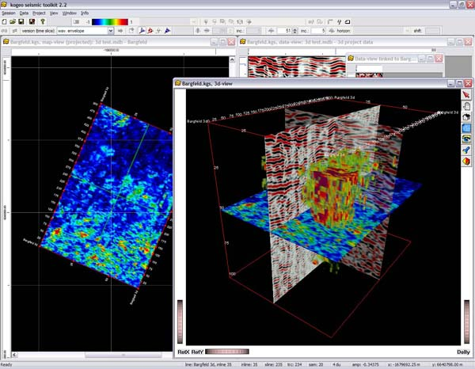
09.10.2008 11:18
Journals with RSS feeds
Today, it seems rare to to find
journals with RSS feeds. Finally I found one that is intersting to
me: ICES Journal of
Marine Science. There is just too much going on for me to go
look for a journal each month and I can't deal with any more
email.
e.g. stuff like this: Anderson et al., Acoustic seabed classification: current practice and future directions.
e.g. stuff like this: Anderson et al., Acoustic seabed classification: current practice and future directions.
09.10.2008 10:09
List of languages I know
based on
this and
this
The exact earlier years are fuzzy in my head...
Or how about start of preferred/heavily-used OSes:
Trackback: the meme has mutated [dealmeida.net]
The exact earlier years are fuzzy in my head...
1979. BASIC 1985. FORTRAN 66 & 77 1990. CSH/TCSH 1991. C++ 1991. ML (painful memories) 1991. LISP 1991. ADA 1991. Make 1991. Prolog 1991. 68K assembly 1991. MIPS assembly 199?. Karol the !@#$%^& Robot - tutoring students with this sucked 1993. HTML (hardly a real language, but it the impact was huge) 1994. Matlab 1996. TCL 1996. Python 1999. BASH 2000. Java 2000. Fortran 90/95 2002. SQL 2008. JavaScriptI've stumbled through Perl and PHP, but I never really programmed in those two.
Or how about start of preferred/heavily-used OSes:
1978?. HP Terminal 1984. MS DOS + HP Touch screen 1985. PC-DOS 1989. VMS 1989. TOPS-20 1990. Windows 3.0 1990. SunOS 4.x 1990. Mac OS pre OSX 1992. NeXT 1992. AIX 1992. D-UX / Alpha 64 bit 1993. Linux 1993. AmigaOS (version?) 1993. (Free?) BSD on a PC 1994. IRIX 1999. Windows 98 1996. VmWare 2001. Mac OSXNot shown are the out dates for each OS when I stopped seriously using it. At the moment, I am left with Linux and MacOSX as my primary OSes with occasional use of Solaris and Windows XP.
Trackback: the meme has mutated [dealmeida.net]
09.09.2008 17:20
GeoCoastPilot on Panbo
Thanks go to Ben Ellison for
mentioning the GeoCoastPilot on Panbo to help get people to evaluate
our research prototype:
GeoCoastPilot, early adopters needed!
Make sure to check out the comments for an interesting comparison with MaxSea's TimeZero.
(Psssst!... back at work but need a little distraction, preferably for a good cause?) The screen shot above is worth seeing full size, but even then doesn't do justice to the highly dynamic GeoCoastPilot beta program I've been entranced with for the last hour or so. ...
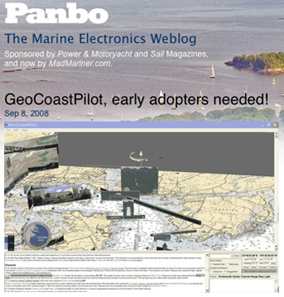
Make sure to check out the comments for an interesting comparison with MaxSea's TimeZero.
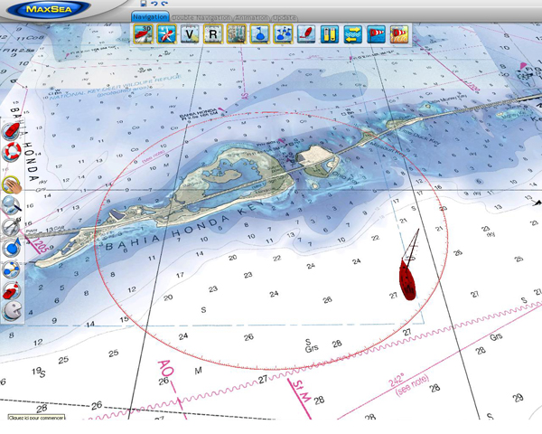
09.09.2008 17:03
Michelle Weirathmueller's defense on Monday
UPDATE: time change!
Michelle's defense is at 9 AM now. And I am bummed out that have to
miss her defense because I'm traveling for work.
ACOUSTIC RANGING IN A DYNAMIC, MULTIPATH ENVIRONMENT by Michelle Weirathmueller
ACOUSTIC RANGING IN A DYNAMIC, MULTIPATH ENVIRONMENT by Michelle Weirathmueller
An acoustic experiment was carried out in October 2007 in Portsmouth Harbor, New Hampshire, to measure the effects of environmental variability on acoustic range measurements over a distance of 948 meters. A fixed source and receiver measured the one-way travel time and signal level fluctuations over four days. Wind, current speed, and tidal data were collected in order to assess their effects on the acoustic measurements. The environmental data collected during this experiment showed variability at many scales, both temporally and spatially throughout the harbor. The acoustic data revealed the presence of multipath arrivals, with 2-3 strong arrivals visible for each transmitted ping. A simple geometric model was used, along with ray-tracing, to describe fluctuations in arrival time and signal level. Acoustic travel times between a fixed source and receiver were converted to range measurements and compared with GPS-derived ranges. This study provides a basis for understanding the capabilities and limitations of range measurements in Portsmouth Harbor, or similar dynamic multipath environments. . 9:00 AM Monday, September 15, 2008 Chase Ocean Engineering Laboratory CCOM-Admiral's Conference Room
09.09.2008 14:56
Thunderbird consuming massive disk space
I was wondering where all of my
laptop's disk space had gone. I have a lot on my computer, but did
I really fill up my my entire 150GB internal drive in less than a
year? And I've even removed my Windows P VMWare image a while ago
to get more space. I happened to look in ~/Library/Thunderbird and
found that part of the tree on my disk was 19GB!! I discovered that
my INBOX file for IMAP was most of that. Nothing I did in the
interface that seemed safe did anything to help. I tried to
compact the folder, but there was no change. On the
server, my $MAIL inbox file is big at 250MB, but that shouldn't be
a problem. Finally, I decided to shutdown Thunderbird, back up the
INBOX and INBOX.msf elsewhere and then nuke both files from within
my Thunderbird Library directory. It took about 10 minutes to start
up the mail reader the next time, but my INBOX on my laptop is now
only 35MB. More better!
09.09.2008 14:56
Eon Fusion
This program looks to have influences
of SGI Explorer, GeoZui4D and Fledermaus. Graphical data flow
layout, time support, and a pretty package. Pretty pictures. Thanks
to Art for telling Roland about this who told me.
Eon Fusion by Myriax.
They need to explain this one more. How are they blending the photo and the sea level change?
Eon Fusion by Myriax.
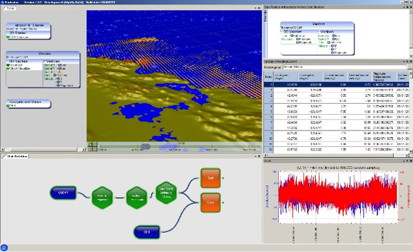
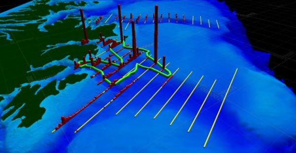
They need to explain this one more. How are they blending the photo and the sea level change?
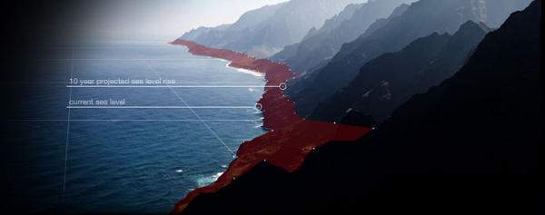
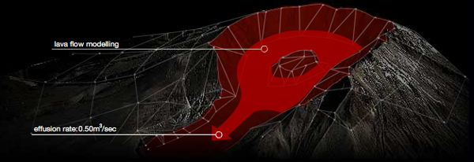
09.08.2008 07:25
Latex source to seismic-py paper
In the spirit of open source
software, I've put the LaTeX source to my latest paper online. Here
is a little bit of it:
schwehr2008-pythonpapers-seismic-py.tex
schwehr2008-pythonpapers-seismic-py.tex
\documentclass[agupp]{aguplus}
\usepackage{graphicx}
\usepackage[usenames]{color}
\usepackage{hyperref}
%\usepackage[draft]{hyperref}
\let\cross=\times\lefthead{Schwehr}
\righthead{seismic-py, Python Papers 2008}
\hypersetup{
pdftitle = seismic-py: Reading seismic data with Python
pdfauthor = Schwehr,
pdfsubject = Geophysical data processing,
pdfkeywords = SEGY Python binary seismic time-series
}
\hypersetup{
colorlinks = true,
linkcolor = red,
anchorcolor = red,
citecolor = blue,
filecolor = red,
pagecolor = red,
urlcolor = blue
}
\newcommand{\module}[1]{\texttt{#1}}
\newcommand{\pythondict}[1]{\texttt{#1}}
\newcommand{\ascii}{\textsc{ASCII}}
\newcommand{\ebcdic}{\textsc{EBCDIC}}
%cite Barry et al. [1975]
%citet Barry et al. [1975]
%citep [Barry et al., 1975]
%citet* Barry, Cavers, and Kneale [1975]
%citep* [Barry, Cavers, and Kneale, 1975]
\begin{document}
\title{seismic-py: Reading seismic data with Python}
\author{Kurt Schwehr}
\affil{Center for Coastal and Ocean Mapping, University of New Hampshire}
\authoraddress{
K. Schwehr, Center for Coastal and Ocean Mapping,
University of New Hampshire,
Chase Ocean Engineering
24 Colovos Rd,
Durham, NH 03824,
schwehr@ccom.unh.edu, \url{http://schwehr.org}
}
\begin{abstract}
The field of seismic exploration of the Earth has changed dramatically
over the last half a century. The Society of Exploration
Geophysicists (SEG) has worked to create standards to store the vast
...
SVN $Id: seismic-py.tex 10096 2008-08-15 19:19:43Z schwehr $
\end{abstract}
\section{INTRODUCTION}
Seismic data systems use acoustic pulses to send sound waves through
water and the solid earth to map layers within the subsurface. They
vary from simple single source and single receiver systems to multiple
sources and long arrays of geophones or hydrophones. The processing
of the received sound waves requires a range of data storage and
signal analysis techniques. Python can support both the data archival
and precessing tasks.
...
\bibliographystyle{agu}
\bibliography{seismic-py}
\end{document}
The syntax highlighting of the LaTeX source was done not with
code2html. I'm trying out GNU
source-highlight. It's being maintained and code2html doesn't
support as many languages.
source-highlight -i short.tex -o short.html -s latex -d --out-format html
09.07.2008 10:17
Making python programs have an importable main
I keep trying to make my python code
better. Python is a great language, but as with all languages, how
you use it strong impacts how well your code works and how
maintainable the code is (both by the author and external people
who will see the code). I just started switching to making the code
behind main as a function. Here is an article that talks about why
this is good. It also gives good reason to avoid calling sys.exit()
as much as is possible.
Why your main program should be importable by Chris Siebenmann.
Why your main program should be importable by Chris Siebenmann.
- For debugging your code with a python shell.
- For pychecker, pylint, epydoc, or other system that wants to import your code and and use python to understand the code
09.06.2008 22:57
Science team leaves the Healy
The aloftcon camera caught this image
of the helocopter offloading the science team from the Healy. Most
of the science team is currently in SeaTac waiting for various
flights home.
Original: 20080906-0301.jpeg
The location in Google Earth:
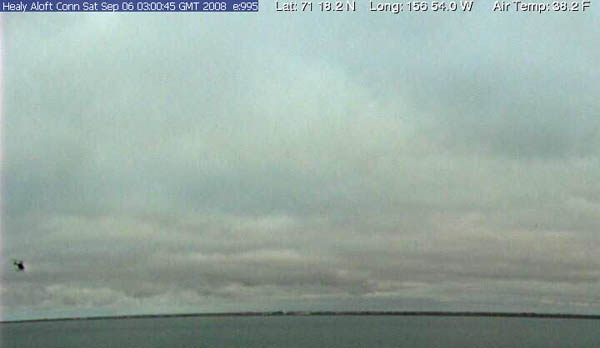
Original: 20080906-0301.jpeg

The location in Google Earth:
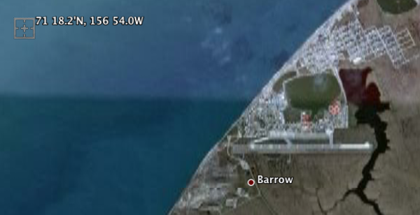
09.05.2008 17:39
Adv Tech to Explore the Oceans and Shallow Survey 2008
Don't for get that Shallow Survey 2008 is Oct
21-24. The conference is just down the road from CCOM.
Bennett Symposium
Bennett Symposium
It is my pleasure to invite you to participate in the upcoming Bennett Symposium on "Using Advanced Technology to Explore the Oceans" to be held on October 9th and 10th of 2008 on the Hattiesburg campus of the University of Southern Mississippi. I will be coordinating this symposium as winner of the 2008-2009 Bennett Professorship which was established to honor the son of Mr. and Mrs. T.W. Bennett, Sr., of Natchez, Mississippi. This endowed professorship is named in honor of their son, T.W. (Buddy) Bennett, Jr., who graduated from The University of Southern Mississippi in 1967, but has been "missing in action" since his plane crashed in Viet Nam in 1972. The symposium takes place every two years to honor Buddy and this year's topic should be of interest to many of you on this mailing list. Speakers from all across the country will make presentations on topics such as: . - manned and unmanned submersibles, including AUVs - autonomous gliders - the latest in ROV technology - seafloor mapping (LIDAR as well as multibeam) - precision navigation - the new NOAA ship and its telepresence technology - deep diving for natural product research - remote seafloor observatories - Microsensors for biological research - advanced sonar systems - satellite-based bathymetric measurements - and other topics! Regards, Vernon AsperAnd Hydro8 [Hydro International] in Liverpool 4-6 November. http://www.hydro8.org.uk/
09.05.2008 17:32
Building track lines over a region
For a CCOM/JHC project, Jim G. needs
a series of lines 500m apart over a region. This is a lot of work
in a tool like Fledermaus to create this kind of thing. This is
something that people normally use HyPack to do.
I wanted to try out doing this kind of task with PostGIS and I needed a quick break. Here is how I did it, but it took a bit longer than I was expecting. First I need to compute the intersection of the bounding polygon with a series of lines running easy west. Here is mklines.py:
Python and PostGIS make this task pretty easy. Don't forget to cleanup the 1200 temp files now sitting on your computer after trying this
I wanted to try out doing this kind of task with PostGIS and I needed a quick break. Here is how I did it, but it took a bit longer than I was expecting. First I need to compute the intersection of the bounding polygon with a series of lines running easy west. Here is mklines.py:
#!/usr/bin/env python
x0 = -77.4589
x1 = -73.2555
#
y0 = 29.9144
y1 = 33.1567
#
dy = y1 - y0
ny = 1+ int(dy / 0.005) # 500m
#
poly='POLYGON((-73.25549438 33.04821167, -76.33447876 33.15672241, -77.41587524 31.44949341, -77.45893921 30.53608643, -77.02830444 29.91438477, -76.35857666 30.64095947, -73.88764160 31.84687744, -73.25549438 33.04821167))'
#
for i in range (ny):
y = y0 + i * 0.005
line = '(%f %f, %f %f)' % (x0,y,x1,y)
linestring = 'LINESTRING(%f %f, %f %f)' % (x0,y,x1,y)
print "SELECT AsText( ST_Intersection('%s', '%s') );" % (poly,linestring)
It outputs lines that look like this:
SELECT AsText(
ST_Intersection(
'POLYGON((-73.25549438 33.04821167, -76.33447876 33.15672241, -77.41587524 31.44949341, -77.45893921 30.53608643, -77.02830444 29.91438477, -76.35857666 30.64095947, -73.88764160 31.84687744, -73.25549438 33.04821167))',
'LINESTRING(-77.458900 29.914400, -73.255500 29.914400)'
)
);
Now setup postgis on my mac:
% fink install postgis83 % sudo -u postgres createuser -U postgres $USER % createdb somedb % psql somedb "CREATE LANGUAGE plpgsql;" % psql -f /sw/share/doc/postgis83/lwpostgis.sql -d somedb % psql -f /sw/share/doc/postgis83/spatial_ref_sys.sql -d somedbNow pipe the results from mklines into PostGIS:
% mklines.py | psql somedb | head -4
astext
-----------------------------------------------------------------
LINESTRING(-77.0283149893808 29.9144,-77.0282904015892 29.9144)
(1 row)
That looks good, so grab the coordinates:
% mklines.py | psql somedb | grep LINESTRING | cut -c12- > results.txtresults.txt looks like this:
(-77.0283149893808 29.9144,-77.0282904015892 29.9144) (-77.031778344859 29.9194,-77.0236815996312 29.9194) (-77.0352417003373 29.9244,-77.0190727976732 29.9244) (-77.0387050558155 29.9294,-77.0144639957152 29.9294) (-77.0421684112938 29.9344,-77.0098551937572 29.9344)From here, we need to get each line of two points into the form that will work with Fledermaus.
x0 y0 x1 y1We also need to create a shell script of cmdop commands to write out an sd file for each line. Here is sdfiles.py:
#!/usr/bin/env python
#
script = file ('make-sd-files.sh','w')
script.write('#!/usr/bin/env bash\n')
#
i = 0 # Keep track of the line numbers
for line in file('results.txt'):
i += 1
line = line.strip('()\n')
start,end = line.split(',')
out = file('%03d.xy'%i,'w')
out.write('%s\n%s\n' %(start,end))
out.close()
cmd = 'cmdop mklines -in %03d.xy -out line%03d.sd -data xy' % (i,i)
script.write(cmd+'\n')
After running the script, we now have make-sd-files.sh that looks
like this:
#!/usr/bin/env bash cmdop mklines -in 001.xy -out line001.sd -data xy cmdop mklines -in 002.xy -out line002.sd -data xy cmdop mklines -in 003.xy -out line003.sd -data xy cmdop mklines -in 004.xy -out line004.sd -data xy cmdop mklines -in 005.xy -out line005.sd -data xy ...Run the script and watch it create over 600 sd files. From here, open Fledermaus. Then File -> Open Data Object. Then select all the sd files. File -> Save Scene and you are done.
Python and PostGIS make this task pretty easy. Don't forget to cleanup the 1200 temp files now sitting on your computer after trying this
09.05.2008 13:40
Maritime Casualty Investigation Association
MCIA Maritime
Casualty Investigation Association
Maritime Accident Casebook has been asked to conduct a survey regarding a proposal for a Maritime Casualty Investigation Association to feel out individuals and various industry sectors about the desirability of such a body. The purpose of this email is to gain feedback on the proposal. . It is intended that the association actively promote maritime/offshore casualty investigation as a profession, act as a 'watering-hole' for the public and private sectors, promote the concept of casualty investigation as an element in safety enhancement and risk reduction rather than liability-focussed, develop a unified set of competencies for maritime/offshore casualty investigation and encourage compliance with relevant IMO codes and obligations. ...
09.05.2008 08:54
Bee in the garden
A little something to offset all the
code from early this morning:
09.05.2008 07:50
trac with django
UPDATE: Template filter
implementing the Trac wiki markup language
[djangosnippets]
I've been trying to come up with creative ways to approach learning django. Having django 1.0 released is very exciting, but as a beginner, the differences between the two books I have and what actually works is fairly large. My next django app is appearing to be somewhat complicated. I have yet to figure out what the database models should look like. I figured that I would look at an application that I think is fairly impressive and see what the corresponding model.py might look like. For my first try, I picked trac - an integrated SCM and project management tool.
Looking through the rest of the tables, I don't see any other than UNIQUE that might trip up django. It looks like it might not be that hard to completely rewrite trac as a django application. If only I had the time! I'm thinking the hardest part would be the integration with svn or other revision control systems. But maybe if the project used the python based Mercurial (hg), it might be doable in a short period of time.
This excercise did not quite give me the insite I was hoping for on my application. I think next, I'll look into on of the flight operations tools called IPRW (Image Product Release Website). That database (using mysql, jQuery, php, and gallery2) has a lot of interesting components that I'd like to emulate in django.
I've been trying to come up with creative ways to approach learning django. Having django 1.0 released is very exciting, but as a beginner, the differences between the two books I have and what actually works is fairly large. My next django app is appearing to be somewhat complicated. I have yet to figure out what the database models should look like. I figured that I would look at an application that I think is fairly impressive and see what the corresponding model.py might look like. For my first try, I picked trac - an integrated SCM and project management tool.
% fink install trac-py25 % mkdir -p ~/Desktop/trac-django/trac % cd ~/Desktop/trac-django/trac % trac-admin `pwd` initenv % htdigest -c .htdigest localhost $USER enter the password you want % tracd -p 9000 --auth="*",`pwd`/.htdigest,localhost `pwd` % open http://localhost:9000/Now log in with your username and make some changes to the wiki pages and add a ticket or two with some updates. Now kill that tracd webserver. It's time to work with django.
% cd ~/Desktop/trac-django % django-admin.py startproject monitor_trac % cd monitor_trac Edit settings.py to have a database of sqlite3 and a database of trac.db % ln -s ../trac/db/trac.db % python manage.py inspectdb > models_autogen.pyThat last inspectdb call will go into the trac database and try to build the python code to represent the tables in the trac database. Time to see what we have.
% sqlite3 trac.db .tables
sqlite3 trac.db .tables
attachment node_change session_attribute version
auth_cookie permission system wiki
component report ticket
enum revision ticket_change
milestone session ticket_custom
% sqlite3 trac.db ".schema wiki"
CREATE TABLE wiki (
name text,
version integer,
time integer,
author text,
ipnr text,
text text,
comment text,
readonly integer,
UNIQUE (name,version)
);
CREATE INDEX wiki_time_idx ON wiki (time);
Here is what django thought about that table:
class Wiki(models.Model):
name = models.TextField(blank=True)
version = models.IntegerField(null=True, blank=True)
time = models.IntegerField(null=True, blank=True)
author = models.TextField(blank=True)
ipnr = models.TextField(blank=True)
text = models.TextField(blank=True)
comment = models.TextField(blank=True)
readonly = models.IntegerField(null=True, blank=True)
class Meta:
db_table = u'wiki'
It doesn't look like this will work right. Let's check.
% python manage.py startapp trac Error: 'trac' conflicts with the name of an existing Python module and cannot be used as an app name. Please try another name. % python manage.py startapp dt % rm trac.db # Get rid of the symbolic link to keep the original database intactNow put the above wiki model into dt/models.py. Then edit the INSTALLED_APPS in settings.py to look like this:
INSTALLED_APPS = (
'monitor_trac.dt',
)
Time to create and view the database table that does with this
model.
% python manage.py sqlall dt
BEGIN;
CREATE TABLE "wiki" (
"id" integer NOT NULL PRIMARY KEY,
"name" text NOT NULL,
"version" integer NULL,
"time" integer NULL,
"author" text NOT NULL,
"ipnr" text NOT NULL,
"text" text NOT NULL,
"comment" text NOT NULL,
"readonly" integer NULL
)
;
COMMIT;
Looks like there is an extra "id" field as the primary key. Django
does not currently understand the UNIQUE(name,version)
constraint on the database, but I think that it wouldn't be too
much work to dump the trac database and rebuild it with the above
table plus the UNIQUE.Looking through the rest of the tables, I don't see any other than UNIQUE that might trip up django. It looks like it might not be that hard to completely rewrite trac as a django application. If only I had the time! I'm thinking the hardest part would be the integration with svn or other revision control systems. But maybe if the project used the python based Mercurial (hg), it might be doable in a short period of time.
This excercise did not quite give me the insite I was hoping for on my application. I think next, I'll look into on of the flight operations tools called IPRW (Image Product Release Website). That database (using mysql, jQuery, php, and gallery2) has a lot of interesting components that I'd like to emulate in django.
09.04.2008 19:38
seismic-py paper out in Python Papers
Just out... this is the first time
I've written a peer reviewed paper by myself. A very different
experience. This paper is much better thanks to the
reviewers.
Python Papers vol 3, No 2
Entire Volume 3 Issue 2 in one PDF
seismic-py: Reading seismic data with Python by Kurt Schwehr
Python Papers vol 3, No 2
Entire Volume 3 Issue 2 in one PDF
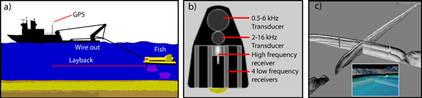
seismic-py: Reading seismic data with Python by Kurt Schwehr
Center for Coastal and Ocean Mapping, University of New Hampshire Abstract. The field of seismic exploration of the Earth has changed dramatically over the last half a century. The Society of Exploration Geophysicists (SEG) has worked to create standards to store the vast amounts of seismic data in a way that will be portable across computer architectures. However, it has been impossible to predict the needs of the immense range of seismic data acquisition systems. As a result, vendors have had to bend the rules to accommodate the needs of new instruments and experiment types. For low level access to seismic data, there is need for a standard open source library to allow access to a wide range of vendor data files that can handle all of the variations. A new seismic software package, seismic-py, provides an infrastructure for creating and managing drivers for each particular format. Drivers can be derived from one of the known formats and altered to handle any slight variations. Alternatively drivers can be developed from scratch for formats that are very different from any previously defined format. Python has been the key to making driver development easy and efficient to implement. The goal of seismic-py is to be the base system that will power a wide range of experimentation with seismic data and at the same time provide clear documentation for the historical record of seismic data formats.
09.04.2008 18:41
ORBCOM AIS Sat Data
From the USCG RDC Highlights (29 Aug
2008):
New AIS Satellite Data The long anticipated launch of the ORBCOMM AIS satellite occurred on 19 June. In all, there were six AIS satellites launched. The first being activated is the USCG funded satellite. Initial indications are that the satellite is operating and does receive AIS signals. ORBCOMM has been provided with all the information needed to send the satellite's live AIS data to the R&D Center's server. The R&D Center received the first data in early August. The initial goal is to have a preliminary assessment of the satellite's coverage performance prior to the Technical Exchange on AIS via Satellite (TEXAS) meeting scheduled for 3 and 4 September in the Washington, D.C. area.This looks interesting... looks like other groups use 'Viz' in their software titles. I need to find out more about their Viz Tools.
Interim Viz Tools Assessment Completed The visualization tool system AKA, Viz Tools, obtains, consolidates, manages, shares, and displays information on arriving vessels, situational status and daily operations for use by the Sector Miami Sector Command Center (SCC) watch team. Viz Tools consolidates information from USCG enterprise and commercial sources. The RDC has completed a concept evaluation of the software provided to and accessed by SCC watch standers via their standard USCG workstations. The informal assessment demonstrated that this automation effectively boosts SCC watch standers' situational awareness and response planning activities and thereby enhances SCC's operations. The results of the informal assessment are being used by CG-7412 to reduce performance risks in the new USCG Command 21 Program which is procuring data management capabilities similar to those in Viz Tools. Project: Visualization Tools for Situational Awareness and Emergency ResponseWow... I talked about using commercial airlines for airphotos a couple years ago in my blog and now this:
... Another upcoming white paper will explore the concept of non-traditional surveillance assets (outfitting of commercial airlines) as part of sovereign MDA.I was thinking more about over land, but over water works too.
09.04.2008 10:04
UDP with python
We have a weather station in our
building sending UDP messages to the network. Here is some quickly
thrown together python code to listen to UDP messages. It doesn't
have all the fancy features, but it illustrates how easy it is to
start getting data. I'm using the USCG N-AIS style logging format
with a station name and Unix UTC timestamp at the end of each line.
Here are the results:
#!/usr/bin/env python
import socket
import time
#
host='0.0.0.0' # All interfaces
device_address = '192.168.8.35'
port=4000
buffer = 10000
#
sock = socket.socket(socket.AF_INET,socket.SOCK_DGRAM)
sock.bind((host,port))
#
verbose=True
#
while 1:
data,addr = sock.recvfrom(buffer)
if addr[0]!=device_address:
if verbose:
print 'dropping data from ',addr
continue
if not data:
print "No data."
break
else:
timestamp = time.time()
print '%s,r%s,%d' % (data.strip(),addr[0],timestamp)
And here is a bit of test code to send out a UDP test message:
#!/usr/bin/env python
import socket
UDP_IP="127.0.0.1"
UDP_PORT=4000
MESSAGE="Hello, World!"
sock = socket.socket( socket.AF_INET, # Internet
socket.SOCK_DGRAM ) # UDP
sock.sendto( MESSAGE, (UDP_IP, UDP_PORT) )
See also: http://wiki.python.org/moin/UdpCommunicationHere are the results:
% ./log-udp.py Date/Time: 8.09.04 14:21:46 01 Reference 652,r192.168.8.35,1220538575 02 Wind Speed Avg. 0.46 m/s,r192.168.8.35,1220538579 03 Wind Gust 0.93 m/s,r192.168.8.35,1220538583 04 Air Temperature 25.32 Deg.C,r192.168.8.35,1220538587 05 Wind Direction 297.10 Deg.,r192.168.8.35,1220538591 Date/Time: 8.09.04 14:22:46 01 Reference 652,r192.168.8.35,1220538635 02 Wind Speed Avg. 0.62 m/s,r192.168.8.35,1220538639 03 Wind Gust 1.55 m/s,r192.168.8.35,1220538643 04 Air Temperature 25.32 Deg.C,r192.168.8.35,1220538647 05 Wind Direction 269.32 Deg.,r192.168.8.35,1220538651
09.04.2008 08:28
Unknown UNH
Unknown UNH
AT SEA . As one of 30 sea grant institutions in the country UNH is part of a program Congress created in the 1960s for the purpose of marine-based research and education. UNH focuses most of its attention on the Isles of Shoals off the coast of Maine, where its Marine Program operates the Shoals Marine Laboratory in conjunction with Cornell University. In the summer especially, students and professors from across the country make this unique and fascinating ecological zone their home, conducting research and taking classes on a variety of related topics. UNH has made plenty of enduring contributions to marine research; just last February, the university's Center for Coastal and Oceanic Mapping/Joint Hydrographic Center revealed evidence that Alaska's continental slope extends 100 miles farther than previously believed, which may entitle the U.S. to a larger area of natural resources.
AND IN SPACE . The space race may be on hiatus but UNH is rocketing skyward in research. The Institute for the Study of Earth, Oceans and Space (EOS) sits alongside Harvard and Princeton as a "high-impact university" for scholarly citations in the fields of geoscience and environmental science. EOS receives millions annually in research grants from federal agencies to conduct its studies. It is the university's largest research initiative, and it has supplied instrumentation to roughly 22 missions - a unique accomplishment, as universities are rarely granted permission to design such hardware. In July, the university held a three-day meeting commemorating the work of NASA's Federation of Earth Science Information Partners. The Federation, of which UNH is a member institution, oversees the use of satellite data to help create a more sustainable planet.
09.03.2008 19:13
Canadian ice sheet breaks loose
Huge ice sheet breaks loose in Canada [USA Today / AP]
Update Sep 04: More details: The Arctic's "New Reality": Another Ice Shelf Collapses [wired science]
A massive 19-square-mile ice shelf in Canada's northern Arctic has broken away from Ellesmere Island, surprising scientists who say the floating ice shelf is another dramatic indication of how warmer temperatures are changing the polar frontier. . Derek Mueller, an Arctic ice shelf specialist at Trent University in Ontario, said Wednesday that the 4,500-year-old Markham Ice Shelf separated in early August and is now drifting into the Arctic Ocean.
Update Sep 04: More details: The Arctic's "New Reality": Another Ice Shelf Collapses [wired science]
09.03.2008 08:35
A flower in the garden
The zucchini (?) plant in the garden
is really going crazy in the garden. It's grabbing a hold of
everything else and growing everywhere it can. Last year, I was
never able to get one of these started. This year, it's taking care
of itself. The weather has been really dry for the last week or
more, so I'm having to water frequently.
09.02.2008 19:32
A little more work with CSS
A little bit of playing with CSS:
Now if only schwehr.org were back online. The server that ACD and Scott White setup had an uptime of about 790 days. That way outweighs kds.ucsd.edu/schwehr.org that was up for just a year when it ran linux or the linux tide datalogger at Jackson lab that is at 190 days.
UPDATE 20080905: I've modified nb_default.css to do borders around images.
<html>
<head>
<title>Making pre blocks stand out and an image with a border</title>
<style type="text/css">
pre {background: #CCC; border: 1px solid #888; padding: 2mm}
img[withborder] {border: 3px solid red}
</style>
</head>
<body>
<pre>A paragraph in a box</pre>
<img withborder="true" src="ge-s57.png"/>
</body>
</html>
I now realize how crazy it is that I was putting borders around
images when CSS can do it and I can later change it without having
to modify the source image. I know this is not advanced CSS, but it
gets me out of the dark ages of 1994 style html.Now if only schwehr.org were back online. The server that ACD and Scott White setup had an uptime of about 790 days. That way outweighs kds.ucsd.edu/schwehr.org that was up for just a year when it ran linux or the linux tide datalogger at Jackson lab that is at 190 days.
UPDATE 20080905: I've modified nb_default.css to do borders around images.
img[withgrayborder] { border: 2px solid #666 } Now I
can stop doing borders in Photoshop. I just have to add
withgrayborder="True" between img and src for any
images that need borders.
09.02.2008 10:18
Northwest passage issues
Plan on navigating the Northwest Passage? Plan again. [The
Maritime blog]
The U.S. tanker MANHATTAN navigates the Northwest Passage in 1969, making it the first commercial ship to make the voyage.
09.01.2008 17:23
Which way are we going?
Matt and I had a GPS logging camera
and an AIS receiver with a GPS logging for this cruise, but the
neither camera had a built in compass. How do we know which way we
are looking? How about looking across the ships analog compass?
An easy way to make sure the GPS is making sense in a GPS enabled camera or to check the clock in a non-gps camera is to take a picture of the ships GPS. This GPS display only updates every 2 seconds, but this is plenty for our photos.
Here is the AIS+GPS SR162g logging both GPS and vessel data (why not log AIS?). I used iPhoto for the initial imports. Too bad iPhoto is not GPS EXIF aware in a real sense. It reads the EXIF fields and displays the text of the GPS coordinates, but no map view.
Note: suddenly this afternoon, emacs is taking a very long time to open. What is going on with my laptop? What is the equivalent to strace/par for the Mac so I can see what system calls are taking a long time? I don't want to go learning some big GUI app like Shark.
Update: Thanks to Jim Thompson for answering with dtrace.
An easy way to make sure the GPS is making sense in a GPS enabled camera or to check the clock in a non-gps camera is to take a picture of the ships GPS. This GPS display only updates every 2 seconds, but this is plenty for our photos.
Here is the AIS+GPS SR162g logging both GPS and vessel data (why not log AIS?). I used iPhoto for the initial imports. Too bad iPhoto is not GPS EXIF aware in a real sense. It reads the EXIF fields and displays the text of the GPS coordinates, but no map view.
Note: suddenly this afternoon, emacs is taking a very long time to open. What is going on with my laptop? What is the equivalent to strace/par for the Mac so I can see what system calls are taking a long time? I don't want to go learning some big GUI app like Shark.
Update: Thanks to Jim Thompson for answering with dtrace.
09.01.2008 17:05
What's new in Python 2.6
We are one month away from Python
2.6. What's
New in Python 2.6 is well worth a read. The "with"
functionality is very cool for all sorts of programming where
cleanup on exit is necessary, but not fun. C++ programmers often do
this by putting an object in a new stack frame and then when the
stack frame goes away, the object destructor gets called and cleans
things up. I first saw this with Ace/Tao by Schmidt for making sure
that you release locks.
Read the document for lots of other good features.
Read the document for lots of other good features.
09.01.2008 15:51
Phx labor day release of images
I had the privilege to day to be the
one who hit the release image for the Labor Day set of Phoenix
press images. There is a spectacular movie of the clouds going by
and an image of the trenching.
09.01.2008 15:44
Garden update
Finally, the garden is taking hold
(at least some of it). Here is a photo from August 28th.
It may not be as exciting to you, but I can really see the changes between that and 4 days later. The squash is definitely trying to take over. I finally decided to just leave the ultra-late starts in their planters. Every day matters at this point. The beans are just a couple days away from the first harvest. I don't think I am going to get any cabbage or swiss chard this year.
It may not be as exciting to you, but I can really see the changes between that and 4 days later. The squash is definitely trying to take over. I finally decided to just leave the ultra-late starts in their planters. Every day matters at this point. The beans are just a couple days away from the first harvest. I don't think I am going to get any cabbage or swiss chard this year.
09.01.2008 15:39
Hampster during the day
Hamsters are fun at night when they
roll around the house in their hamster balls, but what do they look
like during the day? This guy finally discovered his new house
today after it being in his cage for a month.
09.01.2008 08:28
AIS parsing trouble
Loic has found two more trouble spots
with noaadata parsing AIS messages. I very much appreciate bug
reports.
I didn't notice that '"' is a validate AIS 6 bit text value for strings:
I didn't notice that '"' is a validate AIS 6 bit text value for strings:
" 34 0x22 10 0010That means that my database code (which is not up to the python db standards) will put a double quote ("") before the name. Why people put quotes in their name field, Idonno, but I should handle this case properly and I don't.
% ./ais_msg_5.py -v -d '!AIVDM,1,1,3,A,544MVC027obuD<u40028lDdP4pTf1T59A<EJ80168@C;36?h0=SPCU1Dh00000000000000,2*7F'
shipdata:
MessageID: 5
RepeatIndicator: 0
UserID: 273114700
AISversion: 0
IMOnumber: 8904367
callsign: UCOQ@@@
name: "MEKHANIK YARTSEV"@@
shipandcargo: 70
dimA: 66
dimB: 19
dimC: 11
dimD: 3
fixtype: 1
ETAminute: 35
ETAhour: 30
ETAday: 0
ETAmonth: 0
draught: 5.4
destination: NANTES@@@@@@@@@@@@@@
dte: 0
Spare: 0
This is one of those messages where you have to know the size to
know how many segments are in the message. Turns out that if you
don't fill all the blocks, AIS sends fewer bits than a slot. This
reduces the chances that you will have bit errors in your message.
Shorter messages are supposed to be a good thing and I've heard
people say that 5 slot messages are a really bad idea.
% ./ais_msg_15.py -v -d '!AIVDM,1,1,,A,?03OvkiGRP7P000,2*31'
Traceback (most recent call last):
File "./ais_msg_15.py", line 902, in <module>
printFields(decode(bv)
File "./ais_msg_15.py", line 186, in decode
r['MessageID2']=int(bv[126:132])
File "/Users/loic/Development/Marine/_AISFON/noaadata-py-0.40/ais/BitVector.py", line 1080, in __getslice__
return BitVector( bitlist = slicebits ) #(c6)
File "/Users/loic/Development/Marine/_AISFON/noaadata-py-0.40/ais/BitVector.py", line 725, in __init__
raise ValueError("wrong arg(s) for constructor") #(A68)
ValueError: wrong arg(s) for constructor
09.01.2008 06:47
USGS Gustav Water Levels
Note that red squares are sensors
that are not real time.
USGS Gustav Hydrologic Impacts map page
NOAA Gustav Page
USGS Gustav Hydrologic Impacts map page
NOAA Gustav Page